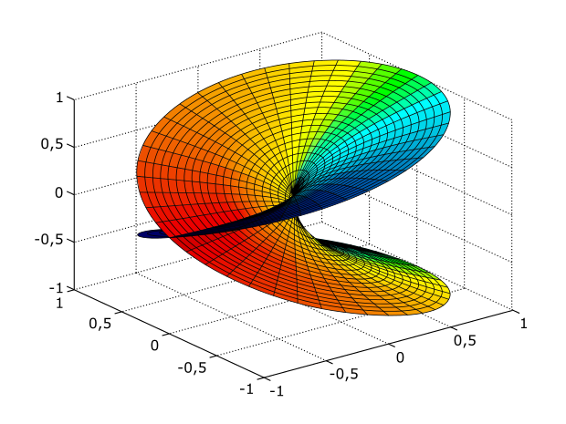
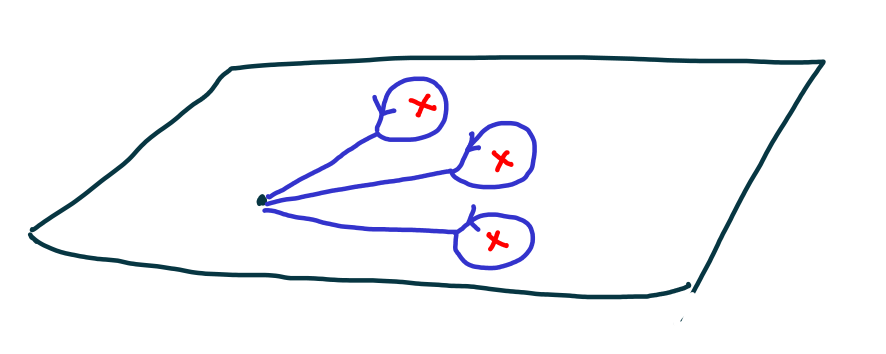
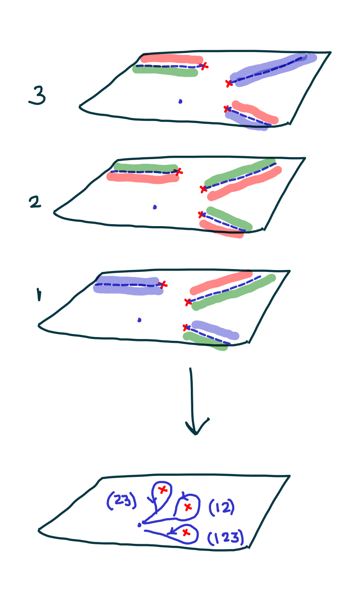
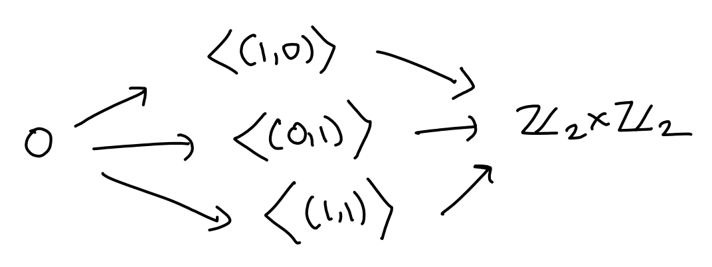
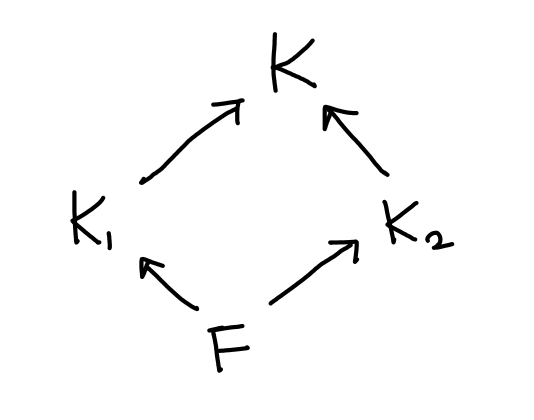

2024 Algebra 2
These are the course materials for MATH3345/6205 Advanced Algebra 2: Fields and Galois Theory as taught at the ANU in 2024.
Wattle
Course contacts
- Lecturer
- Anand Deopurkar <anand.deopurkar@anu.edu.au>
- Demonstrator
- Alexander Lai De Oliveira <Alexander.LaiDeOliveira@anu.edu.au>
Course information
In this course, we will use algebraic structures like groups and rings to study fundamental questions about numbers, functions, and shapes.
Textbook
Algebra by Michael Artin (2nd edition)
Lectures, workshops, and office hours
- Lecture 1
- Mon 9am–10am
- Lecture 2
- Tue 4pm–5pm
- Lecture 3
- Wed 4pm–5pm
- Office hours
- Tue 2pm–3pm and Wed 3pm–4pm.
Workshops will start in week 2.
Assessment
- Bi-weekly problem sets: 30%
- Bi-weekly in class quizzes: 10%
- Midsemester exam: 30%
- Final exam: 30%
- Quizzes
The in-class quizzes will have an individual and a group component. You will do a set of questions on your own (15-20 minutes). You will then do the same set of questions in a small group (15-20 minutes). I will collect the individual as well as the group answer sheet. Your mark will be a weighted average (80% individual + 20% group).
What is the point of the group component? Making correct arguments and catching wrong arguments is an essential part of mathematics. My hope is that you will spend the group component to convince each other of your answers, and in that process, hone your skills of argumentation.
- Hurdles
Passing the mid-semester and the final exam (at least 50%) are hurdles to pass the course.
Collaboration policy
You are encouraged to discuss the course material and the homework with others, but you must write-up your homework on your own. If you work with other students, or get any external help, you must acknowledge it in your homework by writing, for example, “I collaborated with -— and -— on this problem set” or “I benefited from -— page from MathOverFlow for problem 3” or “ChatGPT told me the following answer” (be very careful, though, as ChatGPT is often confidently wrong about mathematics!)
Course plan
| Week | Topic | Reference |
|---|---|---|
| Week 1 | Algebraicity and transcendence | 15.1, 15.2 |
| Week 2 | Degree, constructibility | 15.3, 15.4, 15.5 |
| Week 3 | Factorisation of polynomials | 12.3, 12.4 |
| Week 4 | Fundamental theorem of algebra, adjoining roots | 15.10, 15.6 |
| Week 5 | Finite fields | 15.8 |
| Week 6 | Primitive elements, function fields | 15.8, 15.9 |
| Week 7 | Introduction to Galois theory, symmetric functions | 16.1, 16.2 |
| Week 8 | Splitting fields, symmetries of field extensions | 16.3, 16.4 |
| Week 9 | Fixed fields, main theorem of Galois theory | 16.5, 16.6, 16.7 |
| Week 10 | Cubics, quartics | 16.8, 16.9 |
| Week 11 | Roots of unity, Kummer extensions | 16.10, 16.11 |
| Week 12 | Solvability, Constructibility revisited | 16.12 |
Announcements
Quiz 1
We will have quiz 1 in workshops this week. The format of the quiz is as follows. You will have 15-20 minutes to do the quiz individually. You will then randomly divide into groups of 3 and will do the same quiz in groups for 15-20 minutes. We will then discuss the quiz together for the rest of the time.
As an example, this was the first quiz last year.
Which of the following rings are fields? (You may assume that \(\pi \in \mathbb{C}\) is transcendental over \(\mathbb{Q}\)).
- \(\mathbb{Q}[e^{2 \pi i / 10}]\)
[ ]Field[ ]Not a field
- \(\mathbb{Q}[x]/(x^3+2)\)
[ ]Field[ ]Not a field
- \(\mathbb{Q}[\sqrt 2 + \sqrt[3] 2 ]\)
[ ]Field[ ]Not a field
- \(\mathbb{Q}[\pi^2 + \pi + 1]\)
[ ]Field[ ]Not a field
\(\mathbb{Q}[\sqrt n \mid n \in \mathbb{Z}]\)
(This is the smallest sub-ring of \(\mathbb{C}\) containing \(\mathbb{Q}\) and every complex number of the form \(\sqrt n\) for \(n \in \mathbb{Z}\).)
[ ]Field[ ]Not a field
Homework
Homework 1
This homework is due by Friday, 8 March, 11:59pm on Gradescope.
Problem 1 (15.1.1)
Let \(R\) be an integral domain that contains a field \(F\) as a sub-ring. Assume that \(R\) is finite dimensional when viewed as a vector space over \(F\). Prove that \(R\) is a field.
Problem 2 (15.2.1)
Let \(\alpha\) be a complex root of the irreducible polynomial \(x^{3}-3x+4\) in \(\mathbf{Q}[x]\). Find the inverse of \(\alpha^2+\alpha+1\) in the form \(a + b \alpha + c \alpha^{2}\) with \(a, b, c \in \mathbf{Q}\).
The particular polynomial and element are not important. In fact, it is very likely that your method works in general. But you do not have to explain a general method.
Problem 3 (15.2.3)
Let \(\beta = \omega \sqrt[3]{2}\), where \(\omega = e^{2\pi i / 3}\) and let \(K = \mathbf{Q}[\beta] \subset \mathbf{C}\). Let \(k\) be a positive integer. Prove that the equation \[ x_1^2 + \cdots + x_k^2 + 1 = 0\] has no solution with \(x_1, \dots, x_{k} \in K\).
Problem 4 (15.3.5)
For a positive integer \(n\), set \(\zeta_{n} = e^{2\pi i / n}\). Find all values of \(n\) such that \(\zeta_{n}\) has degree at most 3 over \(\mathbf{Q}\).
You may use (without having to prove it) that for a prime number \(p\), the degree of \(\zeta_p\) over \(\mathbf{Q}\) is \(p-1\), and its minimal polynomial is \[x^{p-1}+ x^{p-2} + \cdots + x + 1.\]
Problem 5 (15.3.7)
- Is \(i\) in \(\mathbf{Q}[\sqrt[4]{-2}]\)?
- Is \(\sqrt[3]5\) in \(\mathbf{Q}[\sqrt[3]2]\)?
Justify your answers. You may assume that \(x^3-5\) and \(x^3-2\) are irreducible over \(\mathbf{Q}\). If it helps you, feel free to assume that \(x^n \pm p\) is irreducible over \(\mathbf{Q}\) for any \(n\) and for any prime number \(p\).
Homework 2
This homework is due by Friday, 22 March, 11:59pm on Gradescope.
Problem 1 (15.4.1)
Let \(K = \mathbf{Q}(\alpha)\) where \(\alpha\) is a complex root of \(x^3-x-1\). Determine the irreducible polynomial for \(\gamma = 1 + \alpha^2\) over \(\mathbf{Q}\).
Problem 2 (15.5.2(a))
For this problem, first go through Section 5 (Construction with Ruler and Compass) to understand the proof of the following theorem (converse of what we did in class).
\bigskip
\noindent Theorem: Suppose the coordinates of a point \(p\) lie in a field \(F = F_n\) such that there exists a chain of fields \[ \mathbf{Q} = F_0 \subset F_1 \subset \dots \subset F_n\] with \(\deg (F_{i+1} / F_i) = 2\) for all \(i\). Then \(p\) is constructible by ruler and compass starting with \((0,0)\) and \((0,1)\).
\bigskip
Prove that a regular 5-gon is constructible by ruler and compass. That is, prove that \((\cos (2\pi/5), \sin (2\pi/5))\) is constructible by ruler and compass starting with \((0,0)\) and \((0,1)\).
Problem 3 (15.6.2 modified)
For this problem, first understand the proof of Proposition 15.3.3.
\bigskip
\noindent Proposition: Let \(F\) be a field of characteristic not equal to 2. Then every quadratic extension \(K/F\) can be written as \(K = F(\delta)\) where \(\delta^2 \in F\).
\bigskip
Let \(m, n \in \mathbf{Z}\). Determine when \(\mathbf{Q}(\sqrt m)\) and \(\mathbf{Q}(\sqrt n)\) are isomorphic.
Problem 4 (15.10.1)
Prove that the subset of \(\mathbf{C}\) consisting of the algebraic numbers is algebraically closed.
Problem 5 (15.7.8)
The polynomials \(f(x) = x^3 + x + 1\) and \(g(x) = x^3 + x^2 + 1\) are irreducible over \(\mathbf{F}_2\). Let \(K = \mathbf{F}_2[x]/(f(x))\) and \(L = \mathbf{F}_2[y]/g(y)\). Describe explicitly an isomorphism from \(K \to L\). Determine the number of isomorphisms from \(K \to L\).
Homework 3
This homework is due by Friday, 19 April, 11:59pm on Gradescope.
Problem 1 (15.7.6)
Factor the polynomial \(x^{16}-x\) over a field of size \(4\) and a field of size \(8\).
Problem 2 (Presentations)
Let \(R \subset S\) be an inclusion of rings. Suppose we have an isomorphism \[ S \cong R[x_1, \dots, x_n]/I, \] where \(x_1, \dots, x_n\) are variables and \(I \subset R[x_1, \dots, x_n]\) is an ideal. Such an isomorphism is called a presentation of \(S\) over \(R\).
Let \(A\) be another ring and suppose a ring homomorphism \(i \colon R \to A\) is given. A presentation of \(S\) over \(R\) gives us all the ways of extending \(i\) to a ring homomorphism \(S \to A\). This is because a ring homomorphism \(R[x_1,\dots,x_n] \to A\) extending \(i\) is determined uniquely by the images of \(x_1, \dots, x_n\) and such a homomorphism is well-defined modulo \(I\) if and only if it sends \(I\) to \(0\).
- Find a presentation for \(\mathbf{Q}[\sqrt[3]{2}]\) over \(\mathbf{Q}\). Use it to determine all homomorphisms \[ \mathbf{Q}[\sqrt[3] 2] \to \mathbf{C}.\] What are the images of these homomorphisms?
- Do the same for \(\mathbf{Q}[\sqrt 2, \sqrt 3]\) over \(\mathbf{Q}\).
Problem 3 (Automorphisms 1)
Let \(p\) be a prime number and set \(\zeta_p = e^{2\pi i / p}\). Let \(F = \mathbf{Q}[\zeta_p]\). Find all automorphisms \[ \phi \colon F \to F.\] Describe the automorphism group \(\operatorname{Aut}(F)\). (This is the group consisting of automorphisms \(F \to F\) with composition as the group law.)
Problem 4 (Automorphisms 2)
Let \(F = \mathbf{Q}[\zeta_p]\), as before. Let \(K = F[2^{1/p}]\). Find all automorphisms \(\phi \colon K \to K\). How many are there? How many restrict to the identity on \(F\)?
Problem 5
Let \(K\) be a field of size \(p^n\). How many elements of \(K\) are perfect squares? Generalise your answer to perfect \(d\)-th powers.
Homework 4
This homework is due by Friday, 3 May, 11:59pm on Gradescope.
Problem 1 (16.3.2)
Determine the degrees of the splitting fields of the following polynomials over \(\mathbf{Q}\):
- \(x^3-2\)
- \(x^4-1\)
- \(x^4+1\)
Problem 2 (16.6.2)
Let \(K = \mathbf{Q}[\sqrt 2, \sqrt 3, \sqrt 5]\). Determine \(\deg K / \mathbf{Q}\), prove that \(K/ \mathbf{Q}\) is a Galois extension, and determine its Galois group.
Problem 3
Let \(p\) be an odd prime number and \(K = \mathbf{Q}[\zeta_{p}]\). Prove that \(K\) contains a unique degree 2 extension of \(\mathbf{Q}\).
Problem 4
Find quartic polynomials in \(\mathbf{Q}[x]\) whose Galois group is isomorphic to:
- The Dihedral group \(D_4\) (of order 8)
- The cyclic group \(C_4\)
Remark: The general version of the above problem is a longstanding open problem called the Inverse Galois Problem: given a finite group \(G\), does there always exist a polynomial in \(\mathbf{Q}[x]\) with Galois group isomorphic to \(G\)?
Problem 5
Let \(\delta \in \mathbf{Q}\) be such that \(\mathbf{Q}[\sqrt \delta]\) is the unique degree 2 extension of \(\mathbf{Q}\) contained in \(\mathbf{Q}[\zeta_{p}]\). For \(p = 7\), find \(\delta\).
Optional (Do not turn in)
This is a continuation of the last problem. You should now know the subfield \(\mathbf{Q}[\sqrt \delta] \subset \mathbf{Q}[\zeta_p]\) for \(p = 3, 5, 7\). Based on this data, make a conjecture for an arbitrary odd prime \(p\). (If you need more data, work out the case of \(p = 11\).) Then try to prove the conjecture.
Homework 5
This homework is due by Friday, May 24, 11:59pm on Gradescope. This is the last homework set, so I have given 3 weeks. \bigskip
The first three problems are about nested square roots, namely complex numbers like \(\sqrt{\sqrt 2 + \sqrt{1 + \sqrt 3}}\). More precisely, \(\alpha \in \mathbf{C}\) is a nested square root if there exists a sequence of fields \[ \mathbf{Q} = F_0 \subset F_1 \subset \cdots \subset F_n\] such that each \(F_{i+1}/F_{i}\) is a quadratic extension and \(\alpha \in F_{n}\). A nested square root is also called a constructible number because these are precisely the complex numbers that can be constructed with a ruler and compass, starting with the two points \(0\) and \(1\).
Problem 1 (16.9.3 modified)
Some nested square roots can be de-coupled to a linear combination of simple square roots. For example, we have \[ \sqrt {5 + 2\sqrt 6} = \sqrt 2 + \sqrt 3.\] But some cannot be. Prove that \(\alpha = \sqrt{1 + \sqrt 3}\) cannot be written as a sum \[ \sqrt{a_{1}} + \cdots + \sqrt{a_{n}}, \quad a_i \in \mathbf{Q}.\]
Hint. Compare the Galois group of the minimal polynomial of \(\alpha\) over \(\mathbf{Q}\) and the Galois group of \(\mathbf{Q}[\sqrt{a_1}, \dots, \sqrt{a_n}] / \mathbf{Q}.\)
Problem 2
Let \(\alpha \in \mathbf{C}\) be a nested square root. Let \(G\) be the Galois group of the minimal polynomial of \(\alpha\) over \(\mathbf{Q}\). Prove that the order of \(G\) is a power of \(2\).
Caution. Make sure that the extension you are considering is Galois!
Problem 3
Prove the converse to the problem before: if \(\alpha \in \mathbf{C}\) is such that its minimal polynomial over \(\mathbf{Q}\) has Galois group whose order is a power of 2, then \(\alpha\) is a nested square root. As an application, show that if \(p\) is a prime number of the form \(2^n+1\), then \(\zeta_p\) is a nested square root.
With this, we have completed a proof of the following.
Theorem. For a prime number \(p\), the regular \(p\)-gon is constructible if and only if \(p\) has the form \(2^n+1\).
In this problem, you may use the following fact from group theory without proof.
Theorem. Let \(p\) be a prime and \(G\) a group of order \(p^{n}\) for \(n \geq 1\). Then \(G\) contains a normal subgroup of index \(p\).
Problem 4
Determine the Galois group of the polynomial \(x^6+3\) over the base fields
- \(F = \mathbf{Q}\)
- \(F = \mathbf{Q}[\zeta_3]\).
Problem 5 (16.12.7)
Find a polynomial of degree \(7\) over \(\mathbf{Q}\) whose Galois group is \(S_7\).
Hint. Take inspiration from the construction in Artin for degree 5.
Workshops
Workshop 1
Degree of \(\mathbf{Q}(\cos (2\pi/p))\)?
\noindent Let \(p\) be a prime number. What is the degree of \(\mathbf{Q}(\cos (2\pi/p))\) over \(\mathbf{Q}\)?
\bigskip
\noindent Hints
Use that \(\mathbf{Q}(\cos(2\pi/p) + i \sin(2\pi/p))\) has degree \((p-1)\) over \(\mathbf{Q}\) and it contains \(\mathbf{Q}(\cos(2\pi/p))\).
Most angles cannot be trisected
See if you can prove the following theorem.
\bigskip
\noindent Theorem — Let \(t\) be such that \(\cos t\) is transcendental. Given \((0,0)\), \((0,1)\), and \((\cos t, \sin t)\), it is impossible to construct \((\cos t/3, \sin t/3)\) using ruler and compass.
\bigskip
\noindent Sketch of the proof
Follow the same method as in class, keeping track of the field that contains the coordinates of the constructed points. The starting field will be \(\mathbf{Q}(\cos t, \sin t)\). The key is to prove that \(\cos (t/3)\) has degree 3 over this field. It is easier to handle the field \(\mathbf{Q}(\cos t)\), which is isomorphic to \(\mathbf{Q}(x)\), the field of rational functions in a variable \(x\). Over this field, prove that \(\cos(t/3)\) has degree 3. To do so, you need to prove that a certain polynomial in \(\mathbf{Q}(x)[y]\) is irreducible. Using the ideas in class, move through irreducibility in \(\mathbf{Q}(x)[y]\), in \(\mathbf{Q}[x,y]\), and \(\mathbf{Q}(y)[x]\). Finall conclude that over \(\mathbf{Q}(\cos(t), \sin(t))\) also \(\cos(t/3)\) must have degree 3.
Workshop 2
Factorisation in a finite field
The polynomial \(f(x) = x^3+x+1 \in \mathbf{F}_5[x]\) is irreducible. Let \(K = \mathbf{F}[t]/(f(t))\). Find the irreducible factorisation of \(f(x)\) in \(K[x]\).
Conjugates
Let \(F \subset K\) be a field extension. We say that \(\alpha, \beta \in K\) are conjugates over \(F\) if they have the same minimal polynomial over \(F\).
Let \(K\) be a finite field of characteristic \(p\). Let \(\phi \colon K \to K\) be the Frobenius map.
- Prove that the conjugates of \(a \in K\) are \(a, \phi(a), \phi^2(a), \cdots\).
- Deduce that the degree of \(a\) over \(\mathbf{F}_p\) is the smallest \(n\) such that \(\phi^n(a) = a\).
- More generally, let \(K \subset L\) be an extension of finite fields with \(|K| = p^n\). Prove that the conjugates of \(a \in L\) over \(K\) are \(a, \phi^n(a), \phi^{2n}(a), \dots\).
- What is the analogue of (2) in this situation?
Factorisation, once again
Let \(f(x) \in \mathbf{F}_p[x]\) be irreducible of degree \(18\). Let \(\mathbf{F}_p \subset K\) be an extension of degree \(4\). How does \(f(x)\) factorise in \(K[x]\)?
\noindent Hint. Let \(K \subset L\) be an extension of degree 9, so that \(\mathbf{F}_p \subset L\) is of degree 36. First factorise \(f(x)\) in \(L\) and then “collect the conjugates” over \(K\).
Workshop 3
Consider the extension \(\mathbf{Q} \subset \mathbf{Q}[e^{2\pi/3}, 2^{1/3}] = F\). This is a Galois extension, which means that the main theorem of Galois theory applies.
There is an isomorphism \[ \mathbf{Q}[x,y]/(x^2+x+1, y^3-2) \to \mathbf{Q}[e^{2\pi/3}, 2^{1/3}]\] that sends \(x\) to \(e^{2\pi i /3/}\) and \(y\) to \(2^{1/3}\). This is not too hard to prove, but you may proceed without proving it.
- Use the presentation above to find all automorphisms of the extension \(F/\mathbf{Q}\).
- Notice that \(F\) is generated by the three roots of \(x^3-2\). Prove that any \(\sigma \in \operatorname{Aut}(F/\mathbf{Q})\) must permute the three roots.
- Label the roots as \(1, 2, 3\). Then you get a group homomorphism \[ G \to S_3.\] Prove that this is an isomorphism.
- Using the above, find the subgroup diagram of \(G\).
- For each subgroup \(H \subset G\), find the fixed field \[ F^H = \{x \in F \mid \sigma (x) = x \text{ for all } \sigma \in H\}.\]
Workshop 4
In this workshop, we explore the theme of roots, coefficients, and symmetry.
- Let \[ p(x) = x^3 + 2x^2 + 3x + 4,\] and let \(\alpha, \beta, \gamma \in \mathbf{C}\) be the roots of \(p(x)\). The expression \[ \alpha^2 + \beta^2 + \gamma^{2}\] is symmetric, and hence must be rational. Find out the exact value.
- If an expression is not completely symmetric, the more symmetric it is, the “closer” it is to the base field.
For example, let \(\alpha, \beta, \gamma\) be the roots (in some big extension) of a cubic \(p(x) \in F[x]\).
Prove that \(\alpha^2 \beta + \beta^2 \gamma + \gamma^2\alpha\) has degree at most 2 over \(F\).
Hint: Following the idea in the proof of the theorem about splitting fields, try to construct a symmetric polynomial of degree 2 with this as a root. - As another application of the principle above, let \(\alpha, \beta, \gamma, \delta\) be the roots (in some extension) of a quartic over \(F\). Prove that \[ \alpha\beta + \gamma\delta\] has degree at most 3 over \(F\).
- As another application of the principle, let \(\alpha_1, \dots, \alpha_n\) be the roots of \(p(x) \in F[x]\) of degree \(n\). Consider \[ d = \prod_{i < j}(\alpha_i - \alpha_j).\] Prove that \(d\) satisfies a quadratic equation over \(F\).
- Sometimes, the element is closer to the base-field than we expect from symmetry. For example, consider the cubic \[ p(x) = x^3-3x-1.\] Prove that for this cubic, the element \(d\) above is actually a rational number. You may find it helpful to consult Wikipedia for the formula for the discriminant of a cubic.
Workshop 5
In this workshop, we will learn how to find Galois groups of irreducible quartic polynomials, up to a small ambiguity. We fix a base field \(F\) of characteristic 0 and an irreducible \(f(x) \in F[x]\) of degree 4. Let \(G\) be the Galois group of \(f(x)\).
For your convenience, here is a list of transitive subgroups of \(S_{4}\) with their orders (up to re-numbering).
| Subgroup | Order |
|---|---|
| \(S_4\) | 24 |
| \(A_4\) | 12 |
| \(C_4 = \langle (1234) \rangle\) | 4 |
| \(D_4\) | 8 |
| \(V = \{e,(12)(34), (14)(23), (13)(24) \}\) | 4 |
- Problem 1
Say \(f(x)\) is a quartic with roots \(\alpha_1, \dots, \alpha_4\). The resolvent cubic \(g(x)\) is the cubic with roots
\begin{align*} \beta_1 &= \alpha_1\alpha_2 + \alpha_3\alpha_4\\ \beta_2 &= \alpha_1\alpha_3 + \alpha_2\alpha_4\\ \beta_3 &= \alpha_1\alpha_4 + \alpha_2\alpha_3. \end{align*}Check that \(f(x)\) and \(g(x)\) have the same discriminant.
- Problem 2
Prove that the discriminant is a square in \(F\) if and only if \(G \subset A_4\).
- Problem 3
Justify the following table (as much as you can) about the Galois group. Use the following observations. Let \(F \subset K\) be a splitting field of \(f(x)\). Let \(L \subset K\) be generated by the 3 roots of the resolvent cubic \(g(x)\). Then \(F \subset L\) is the splitting field of \(g(x)\). We have a surjective group homomorphism \[ \operatorname{Aut}(K/F) \to \operatorname{Aut}(L/F)\] with kernel \(\operatorname{Aut}(K/L)\).
Discriminant square Discriminant non-square Resolvent irreducible \(A_4\) \(S_4\) Resolvent factors as 1+2 Impossible \(D_4\) or \(C_4\) Resolvent factors as 1+1+1 \(V\) Impossible
Notes from class
- 2024-02-19.pdf
- 2024-02-20.pdf
- 2024-02-21.pdf
- 2024-02-26.pdf
- 2024-02-27.pdf
- 2024-02-28.pdf
- 2024-03-04.pdf
- 2024-03-05.pdf
- 2024-03-06.pdf
- 2024-03-12.pdf
- 2024-03-13.pdf
- 2024-03-18.pdf
- 2024-03-19.pdf
- 2024-03-20.pdf
- 2024-03-25.pdf
- 2024-03-26.pdf
- 2024-03-27.pdf
- 2024-04-15.pdf
- 2024-04-16.pdf
- 2024-04-22.pdf
- 2024-04-23.pdf
- 2024-04-24.pdf
- 2024-04-29.pdf
- 2024-04-30.pdf
- 2024-05-01.pdf
- 2024-05-06.pdf
- 2024-05-07.pdf
- 2024-05-08.pdf
- 2024-05-13.pdf
- 2024-05-14.pdf
- 2024-05-15.pdf
- 2024-05-20.pdf
- 2024-05-21.pdf
Course notes from previous years
Disclaimer: These notes may not be complete, accurate, or accurately reflect what happened in class.
Introduction
How an algebraist studies the world?
- Attach an algebraic structure to an object, and then study the object using the algebraic structure.
- The most fundamental algebraic structures are groups and rings.
A deeper look into number rings
- The structure of \(\mathbf{Q}[\alpha]\) for \(\alpha\) algebraic and \(\alpha\) transcendental.
Minimal polynomial
Let us look more closely at the rings \(\mathbf{Q}[\alpha] \subset \mathbf{C}\), or more generally, rings \(F[\alpha] \subset K\), where \(F \subset K\) are fields. We will see that it is simpler to study \(\mathbf{Q}[\alpha]\) rather than \(\mathbf{Z}[\alpha]\).
The key point was that \(F[\alpha] \subset K\) is the image of the ring homomorphism \[ \phi \colon F[x] \to K \] that sends \(F \to K\) by the given inclusion and sends \(x\) to \(\alpha\). Let \(I \subset F[x]\) be the kernel of \(\phi\). The first isomorphism theorem gives an isomorphism \[ F[x]/I \to F[\alpha].\] So, if we want to understand \(F[\alpha]\), it is critical to understand \(I\).
We know that \(I \subset F[x]\) is an ideal. And fortunately, we know a lot about ideals of \(F[x]\). Let us recall what we know.
- Every ideal of \(F[x]\) is a principal ideal. In fact, if \(I \subset F[x]\) is an ideal, and if \(f \in I\) is an element of the smallest degree, then \(I = (f)\).
- The ideal \((f)\) is contained in the ideal \((g)\) if and only if \(g\) divides \(f\).
- The maximal ideals of \(F[x]\) are \((f)\) where \(f\) is an irreducible polynomial.
- The prime ideals of \(F[x]\) are the ideal \((0)\) and the maximal ideals as above.
Let us now look at \(I = \mathrm{ker}\phi\). The ring \(F[x]/I\) is isomorphic to a sub-ring of \(K\), which is a field. Therefore, \(F[x]/I\) is an integral domain. So \(I\) is a prime ideal.
Now there are two possibilities:
- \(I = 0\) :: In this case, there are no polynomials in the kernel of \(\phi\). This means that there is no polynomial in \(F[x]\) that vanishes when you substitute \(x = \alpha\). In this case, we say that \(\alpha \in K\) is transcendental over \(F\).
\(I = (f)\) where \(f\) is a non-zero irreducible polynomial :: In this case, there is a polynomial in the kernel of \(\phi\). That is, there is a polynomial in \(F[x]\) that vanishes when you substitute \(x = \alpha.\) In this case, we say that \(\alpha \in K\) is algebraic over \(F\).
The minimal polynomial of \(\alpha\) or the irreducible polynomial of \(\alpha\) is characterised by any of the following equivalent conditions:
- It generates the kernel of \(\phi \colon F[x] \to K\) that sends \(x \to \alpha\).
- It is an irreducible polynomial that vanishes when you substitute \(x = \alpha\).
It is a polynomial of the smallest degree that vanishes when you substitute \(x = \alpha\).
(Strictly speaking, the conditions determine \(f\) only up to scaling. To remedy this, we usually take \(f\) to be monic.)
Examples
Question
Take \(\alpha = \sqrt[3]{2}\), for example, which is algebraic over \(\mathbf{Q}\). Then Proposition No description for this link says that \(\mathbf{Q}[\alpha]\) is a field. How will you explicitly find the multiplicative inverse of its elements? For example, what is the inverse of \(\sqrt[3]{2}\)? Of \(1 + \sqrt[3]{2}\)?
Proposition
Let \(\alpha, \beta \in K\) be algebraic over \(F\). There is an isomorphism \(F[\alpha] \to F[\beta]\) extending the identity of \(F\) that sends \(\alpha \mapsto \beta\) if and only if \(\alpha\) and \(\beta\) have the same minimal polynomial.
Summary
We have the following dichotomy.
| \(\alpha\) algebraic | \(\alpha\) transcendental |
|---|---|
| \(F[x] \to K, x \mapsto \alpha\) has a non-zero kernel | \(F[x] \to K, x \mapsto \alpha\) has zero kernel |
| \(\alpha\) satisfies a polynomial equation | \(\alpha\) does not satisfy a polynomial equation |
| \(F[\alpha]\) is a field | \(F[\alpha]\) is not a field (just a domain) |
| \(F[\alpha]\) is a finite dimensional \(F\)-vector space | \(F[\alpha]\) is an infinite dimensional \(F\)-vector space. |
Degree
Let \(\alpha \in K\) be algebraic over \(F\). The degree of \(\alpha\) over \(F\), denoted by \(\deg(\alpha/F)\) is
- the degree of its minimal polynomial,
- the dimension of \(F[\alpha]\) as an \(F\)-vector space.
(The two numbers are equal).
More generally, let \(F \subset L\) be fields. We say that \(L/F\) is a finite extension if \(L\) is a finite dimensional \(F\)-vector space. The degree of \(L/F\) is the dimension of \(L\) as an \(F\)-vector space.
Observe that \(\deg(\alpha/F) = \deg(F[\alpha]/F)\).
Example
Let \(L = \mathbf{Q}[i, \sqrt 2]\). Then \(\deg (L / \mathbf{Q}) = 4\).
Multiplicative property of the degree
Let \(F \subset L\) and \(L \subset K\) be finite extensions. Then \(F \subset K\) is also finite and \[ \deg(F/K) = \deg(L/F) \cdot \deg (L/K).\]
Application
If \(\alpha, \beta\) are algebraic over \(F\) then \(\alpha\beta\) and \(\alpha+\beta\) are algebraic over \(F\).
Example
So we know that \(\sqrt 2 + \sqrt 3\) is algebraic. But what is its minimal polynomial? The method of proof does not really give a way to find out. One way to find a polynomial is by taking repeated powers and looking for a linear relation, but we still need tools to prove that the polynomial we found is irreducible.
Example
The degree of \(\mathbf{Q}[\sqrt[3]2, i] / \mathbf{Q}\) is 6.
Corollary
If \(F \subset L\) is an extension of degree \(M\), then the degree of all sub-extensions must divide \(M\). In particular, the degree of every \(\alpha \in L\) must divide \(M\).
For example, an extension of degree \(2^{n}\) cannot contain an element of degree 3.
Irreducibility
We want to develop some tools to prove irreducibility of polynomials. Let us study irreducibility and irreducible factorisation in an arbitrary integral domain \(R\).
Terminology
- A non-trivial factorisation of \(p \in R\) is an expression \(p = ab\) where neither \(a\) nor \(b\) is a unit.
- We say that \(p\) is irreducible if it has no non-trivial factorisation.
- In general, a factorisation of \(f\) into irreducibles is a factorisation \(f = p_1 \cdots p_n\) where each \(p_{i}\) is irreducible.
- We say that two factorisations \(f = p_1 \cdots p_{n}\) and \(f = q_1 \cdots q_{m}\) are equivalent if \(m = n\) and after re-numbering, we have for all \(i)\) an equality \(f_i = g_i \times u_i\) where \(u_i\) is a unit.
- We say that \(R\) has unique factorisation or is a Unique Factorisation Domain if every element of \(R\) has a factorisation into irreducibles and this factorisation is unique up to equivalence.
Example
- \(\mathbf{Z}\) is a UFD.
Proposition
Let \(F\) be a field. Then \(F[x]\) is a UFD.
- Proof:
It is easy to see that every polynomial \(f\) has a factorisation into irreducibles (keep factoring until you cannot). The interesting part is uniqueness. Suppose \[ p_1 \cdots p_{n} = q_{1} \cdots q_{m}.\] Consider \(p_{1}\) on the left. It suffices to show that there is an \(i\) such that \(q_{i} = p_{1} \cdot u \) for a unit \(u\). We then cancel \(p_1\) from both sides and continue. In fact, it suffices to show that there is an \(i\) for which \(p_{1}\) divides \(q_i\) (irreducibility of \(q_i\) implies that the other factor must be a unit). So the key fact is the following:
- Key fact that makes unique factorisation work
If \(p\) is irreducible, and \(p\) divides \(q_1q_2\) then \(p\) divides \(q_1\) or \(p\) divides \(q_2\). Equivalently, if \(p\) is irreducible then \((p)\) is a prime ideal.
We know that the key fact holds because if \(p\) is irreducible then \((p)\) is in fact a maximal ideal.
- Coming back to the proof
By using the key fact repeatedly, we see that \(p\) divides one of the \(q_{i}\)’s.
- Key fact that makes unique factorisation work
- Lesson
If \(R\) is a domain in which every irreducible element generates a prime ideal. Then any two factorisations of \(f \in R\) must be equivalent.
Factorisation over finite fields and integers
Let us come back to the main question: how do we show that a given polynomial is irreducible?
- Over finite fields
Suppose \(R = F[x]\). Then we can just list all the irreducible polynomials in \(F[x]\) by making a sieve. We make a list of polynomials up to a given degree, ordered by the degree: linears, quadratics, cubics, … The linears are automatically irreducible. We take a linear polynomial and cross out every higher degree one that is divisible. We keep going. What remains are the irreducible ones.
This is probably not the most efficient method to test irreducibility, but it works!
- Over the rational numbers
What if \(R = \mathbf{Q}[x]\)? Then we cannot sieve because there are infinitely many polynomials of a given degree. There are algorithmic irreducibility tests (read the end of Section 12.4), but they are a bit involved.
Instead of studying them, we will learn a handful of tools that will be enough for most purposes.
The key idea is the following. We have the diagram \[ \mathbf{Z}/p \mathbf{Z} [x] \leftarrow \mathbf{Z}[x] \rightarrow \mathbf{Q}[x].\] We understand factorisation on the left. It turns out that there is not much difference between irreducibility in \(\mathbf{Z}[x]\) versus \(\mathbf{Q}[x]\). And we can make deductions about factorisation in \(\mathbf{Z}[x]\) by reducing modulo \(p\).
The next two propositions exemplify this idea.
- Proposition
Let \(p \in \mathbf{Z}\) be a prime. Suppose \(f(x) = a_{n} x^n + \cdots \in \mathbf{Z}[x]\) is such that \(p\) does not divide \(a_{n}\) and \(\overline f(x) \in \mathbf{Z}/p \mathbf{Z} [x]\) is irreducible. Then \(f(x)\) cannot factor as \(f(x) = h(x) g(x)\) in \(\mathbf{Z}[x]\) where \(h\) and \(g\) are non-constant.
- Proposition (Eisenstein’s criterion)
Let \(p \in \mathbf{Z}\) be a prime. Suppose \(f(x) = a_{n} x^n + \cdots + a_{0} \in \mathbf{Z}[x]\) is such that \(p\) does not divide \(a_{n}\), divides all other \(a_i\) but \(p^2\) does not divide \(a_{0}\). Then \(f(x)\) cannot factor as \(f(x) = h(x) g(x)\) in \(\mathbf{Z}[x]\) where \(h\) and \(g\) are non-constant.
Factorisation over the rational numbers
Let us relate factorisation over \(\mathbf{Q}[x]\) and \(\mathbf{Z}[x]\). Consider the factorisation \[ 3x+3 = 3 \cdot (x+1).\] This is a non-trivial factorisation in \(\mathbf{Z}[x]\) but trivial one in \(\mathbf{Q}[x]\). This is basically the only difference in the theory.
To get rid of factorisations as above, we introduce the following notion. We say that \(f(x) \in \mathbf{Z}[x]\) is a primitive polynomial if no prime \(p \in \mathbf{Z}\) divides \(f(x)\). Equivalently, for every prime \(p\), the image of \(f(x)\) in \(\mathbf{Z}/p \mathbf{Z}[x]\) is non-zero. Equivalently, we cannot extract a non-unit constant factor. By convention, we also require the leading coefficient of \(f(x)\) to be positive (this is less important; if we don’t do this, we have to amend most of the following statements by adding “up to sign” or “up to a unit in \(\mathbf{Z}\)”).
If \(f(x)\in \mathbf{Z}[x]\) is not primitive, we can simply extract out all primes \(p\) that divide it. In other words, we can write \[ f(x) = c g(x)\] where \(c \in \mathbf{Z}\) and \(g(x)\) is primitive.
More generally, if \(f(x) \in \mathbf{Q}[x]\), then we can take a common denominator of all coefficients and write \(f(x) = 1/N \cdot h(x)\) where \(h(x) \in \mathbf{Z}[x]\). We can then extract a constant factor out of \(h(x)\) if any and get \[ f(x) = c g(x) \] where \(c \in \mathbf{Q}\) and \(g(x) \in \mathbf{Z}[x]\) is primitive. It is easy to check that the expression above is unique.
Slogan: For primitive polynomials, factorisation in \(\mathbf{Q}[x]\) and \(\mathbf{Z}[x]\) behave in the same way.
We will make this precise. First, we need an easy lemma.
- Lemma (Gauss’s lemma)
The product of two primitime polynomials is primitive.
- Proposition
Let \(f(x)\) be a primitive polynomial and \(g(x) \in \mathbf{Z}[x]\) any polynomial. Suppose \(g(x) = f(x) h(x)\) for some \(h(x) \in \mathbf{Q}[x]\). Then \(h(x) \in \mathbf{Z}[x]\).
- Proof
Write \(h(x) = c j(x)\) where \(j(x)\) is primitive and \(c = a/b \in \mathbf{Q}\) (reduced form) and \(g(x) = d i(x)\) where \(d \in \mathbf{Z}\) and \(i(x)\) is primitive. Then \(bd i(x) = a f(x) j(x)\). But \(i(x)\) and \(f(x)j(x)\) are both primitive, so we must have \(bd = a\) and \(i(x) = f(x)j(x)\). In particular, \(a/b = d\) is an integer, and so \(h(x) \in \mathbf{Z}[x]\).
- Proof
- Proposition
Let \(f(x) \in \mathbf{Z}[x]\) be primitive. Then \(f(x)\) is irreducible in \(\mathbf{Z}[x]\) if and only if it is irreducible in \(\mathbf{Q}[x]\).
- Proof
Let us prove the contrapositive. Suppose \(f(x) = g(x) h(x)\) in \(\mathbf{Z}[x]\) is a non-trivial factorisation. Then neither \(g\) nor \(h\) are constant (because \(f\) is primitive). But then this is also a non-trivial factorisation in \(\mathbf{Q}[x]\).
Conversely, suppose \(f(x) = g(x) h(x)\) in \(\mathbf{Q}[x]\) is a non-trivial factorisation. Write \(g(x) = c i(x)\) and \(h(x) = d j(x)\) where \(c,d \in \mathbf{Q}\) and \(i,j\) are primitive. Then \(f(x) = cd i(x)j(x)\) implies that \(cd = 1\), so we may as well write \(f(x) = i(x) j(x)\). This is a non-trivial factorisation in \(\mathbf{Z}[x]\).
- Proof
- Corollary
The irreducible elements of \(\mathbf{Z}[x]\) are prime numbers \(p\) and primitive polynomials \(f(x)\) that are irreducible in \(\mathbf{Q}[x]\).
- Remark
From this, it is not hard to prove that every irreducible in \(\mathbf{Z}[x]\) generates a prime ideal. So \(\mathbf{Z}[x]\) is also a UFD. In general, a similar reasoning using primitive polynomials shows that if \(R\) is UFD then \(R[x]\) is also a UFD.
- Summary
Suppose we are given \(f(x) \in \mathbf{Q}[x]\). By multiplying by a constant, we may assume that \(f(x) \in \mathbf{Z}[x]\) is primitive. Then irreducibility in \(\mathbf{Q}[x]\) is equivalent to the irreducibility in \(\mathbf{Z}[x]\). To prove irreducibility in \(\mathbf{Z}[x]\), we look modulo primes (for example, Eisenstein’s criterion).
Ruler and compass constructions
A fascinating application of the algebra we have done so far is the proof for the impossibility of certain geometric constructions. In particular, we will see that there does not exist a geometric construction using only ruler and compass that can trisect a given angle. But first, here are the rules of the game.
- You are given a finite set of points in the plane. These points are assumed to be constructed.
- The ruler allows you to draw a straight line between any two constructed points.
- The compass allows you to draw a circle centered at a constructed point and passing through a constructed point.
You may add the intersection points of the lines and circles you draw to the set of constructed points, and use the ruler and compass any (finite) number of times.
Lots of cool things can be done.
Example
- Given two points, construct their midpoint.
- Given three points \(A, B, C\), construct the angle bisector.
- Given three points \(A, B, C\), construct the unique circle passing through \(A, B, C\).
- Given two points \(A, B\), divide the segment \(AB\) in 79 equal parts (or any other number).
- …
Algebraising the construction game
To bring algebra into the picture, we introduce coordinates. Let a set of constructed points \(S\) be given. Suppose \(F \subset \mathbf{R}\) is a field that contains all the coordinates of \(S\). The key idea is to explore in what ways \(F\) needs to be enlarged when we construct new points.
- Using the ruler
Suppose we draw a line joining two points of \(S\). Observe the following: we can write the equation of the line in the form
ax + by = c
where \(a,b,c\) are in the field \(F\).
- Using the compass
Suppose we draw a circle centered at a point of \(S\) passing through another point of \(S\). Observe the following: we can write the equation of the circle in the form
(x-a)2 + (y-b)2 = c
where \(a,b,c\) are in the field \(F\).
- Taking intersections
Now is the most crucial part. We add new points by intersecting.
- Intersecting two lines
- the intersection point of two lines of the form No description for this link has coordinates in \(F\). So \(F\) need not be enlarged.
- Intersecting a circle and a line
- the intersection point(s) of a line No description for this link and circle No description for this link have coordinates in \(F[\sqrt a]\) for some \(a \in F\).
- Intersecting two circles
- the intersection point(s) of two circles No description for this link have coordinates in \(F[\sqrt a]\) for some \(a \in F\).
In summary, if we start with a set of constructed points whose coordinates lie in \(F\), any new point we add must have its coordinates either in \(F\) or in \(F[\sqrt a]\) for some \(a \in F\). By repeating our reasoning, we get the following.
Proposition (Main)
Let \(P\) be a point constructed using the ruler and compass from a given set \(S\). Assume that the coordinates of \(S\) lie in a field \(F\). Then there exist extensions \[ F_{0} = F \subset F_1 \subset \dots \subset F_{n}\] of the form \(F_{i+1} = F_i[\sqrt a_i]\) for some \(a_i \in F_i\) and such that the coordinates of \(P\) lie in \(F_{n}\).
In particular, the degree of the extension of \(F\) generated by the coordinates of \(P\) is a power of 2.
Corollary
If the coordinates of \(P\) generate a transcendental extension of \(F\) or an extension whose degree is not a power of 2, then \(P\) cannot be constructed from \(S\) using ruler and compass.
Proposition
We start with the points \((0,0)\) and \((0,1)\). Then the point \((\cos 20, \sin 20)\) cannot be constructed. In particular, the \(60\)-degree angle cannot be trisected, and hence there cannot exist a procedure that trisects a given angle.
- Proof
We can take \(F = \mathbf{Q}\). Trigonometry gives us the triple angle formula \[ \cos(3\theta) = 4 \cos^3(t) - 3 \cos(\theta).\] So \(\cos(20)\) satisfies the equation \[ 1/2 = 4 x^3 - 3x\] or equivalently \[ 8x^3-6x-1 = 0.\] This is irreducible mod 5 and hence irreducible. So \(\cos(20)\) has degree 3 over \(\mathbf{Q}\). But that means it is not constructible!
The fundamental theorem of algebra
We say that a field \(K\) is algebraically closed if every non-constant \(f(x) \in K[x]\) has a root in \(K\).
The following are equivalent:
- \(K\) is algebraically closed.
- Every \(f(x) \in K[x]\) factorises into linear factors.
- The only irreducible \(f(x) \in K[x]\) are linear.
- There is no non-trivial finite extension of \(K\).
- There is no non-trivial algebraic extension of \(K\).
Theorem (Fundamental theorem of algebra)
The field of complex numbers is algebraically closed.
Corollary
Let \(\overline Q \subset \mathbf{C}\) be the set of numbers that are algebraic over \(\mathbf{Q}\). Then \(\overline Q\) is algebraically closed.
Corollary
The only irreducible polynomials over \(\mathbf{R}\) are linear and quadratics with negative discriminant.
Proof(s) of the FTA
Funnily enough, there is no purely algebraic proof of the Fundamental Theorem of Algebra! This is somewhat expected because the construction of \(\mathbf{C}\) goes via the construction of \(\mathbf{R}\), which is quite non-algebraic. So at some point in the proof, some analysis or topology comes in. I consider this is a spectacular example of the unity of mathematics: how different fields of mathematics help each other!
- Winding number proof
A fascinating proof is topological, and uses the notion of “winding number”.
Suppose we have a closed curve in \(\mathbf{C} \setminus 0\), which we encode by a map \(f \colon S^1 \to \mathbf{C} \setminus 0\). We can define a number \(W(f)\) that counts how many times \(f\) “winds around 0”. Defining this rigorously takes some effort, but the key feature of the definition is the following.
Proposition If \(f\) can be continuously deformed into \(g\) while staying in \(\mathbf{C} \setminus 0\) then \(W(f) = W(g)\) .
Here, the technical term for “continuously deform” is “homotopy”.
Lemma (Dog on a leash) If \(h(x)\) is such that \(|h(x)| < |f(x)|\), then \(W(f) = W(f+h)\).
We are now ready to prove the fundamental theorem of algebra.
Suppose \(f(x) \in \mathbf{C}[x]\) is of degree \(n \geq 1\) and has no zeros. We will obtain a contradiction by considering curves of the form \(z \mapsto f(\lambda z)\) where \(\lambda\) is a constant and \(z\) moves on the unit circle. First, if \(\lambda\) is small, then dog-on-a-leash gives winding number 0. Second, if \(\lambda\) is huge, then dog-on-a-leash gives winding number \(n\). But we can continuously move between these by taking \(\lambda\) from a small number to a large number. This is a contradiction.
- Complex analysis proof
We have the following theorem in complex analysis.
Theorem (Liouville) If \(f \colon \mathbf{C} \to \mathbf{C}\) is holomorphic and bounded, then \(f\) is constant.
Suppose \(p(x) \in \mathbf{C}[x]\) does not have a zero. Then \(f(x) = 1/p(x)\) is a bounded holomorphic function. By Liouville’s theorem, it must be constant.
Adjoining roots
Consider the field \(\mathbf{Q}\). We know that it sits in \(\mathbf{C}\), which is algebraically closed. So, although solving algebraic equations over \(\mathbf{Q}\) is not always possible, we can always extend our field by adjoining elements of \(\mathbf{C}\). We never have to face a “lack of solutions”—they are always there in \(\mathbf{C}\).
For a field like \(F = F_{5}\), things are more complicated. Suppose we want to solve \[ x^{2} - 2 = 0.\] That is, we want our number system to have a square root of 2. What do we do? There is nothing like \(\mathbf{C}\) (that we know of) for \(F\).
That does not stop us, however. Consider \(K = F[x]/(x^2-2)\). Then \(K\) is a field extension of \(F\). Let \(\alpha = [x] \in K\). Then \(\alpha^2 - 2 = 0.\) So in \(K\), we have a square root of 2. We have constructed “\(\sqrt{2}\)” out of thin air!
Adjoining a root
Proposition Let \(F\) be a field and let \(p(x) \in F[x]\) be a non-constant polynomial. Then there exists a finite extension \(F \subset K\) such that \(p(x)\) has a root in \(K\). Proof Let \(f(x)\) be an irreducible factor of \(p(x)\). Take \(K = F[x]/f(x)\). Then \(\alpha = [x]\) is a root of \(p(x)\).
Suggestion: How do you represent elements of \(K\)? If \(f(x)\) has degree \(n\), then the elements can be identified with polynomials in \(F[x]\) of degree up to \(n-1\), with addition and multiplication done modulo \(f(x)\). Psychologically, I find it useful to rename \(x\) to a letter from the beginning of the alphabet, like \(a\) or \(\alpha\) so that the elements of \(K\) feel more like numbers than polynomials. This makes it less confusing if we have to make further extensions of \(K\), freeing up \(x\) for polynomials.
- Example
Let us take \(F = \mathbf{Q}\) and \(p(x) = x^3-2\). Then \(K = F[x]/(x^3-2)\). Note that \(K\) does not come with an embedding in \(\mathbf{C}\). You should not think of it as a subfield of \(\mathbf{C}\). Think of it as just hovering over \(\mathbf{Q}\)—spectral, disembodied, incorporeal!
Of course, we can embedd \(K\) into \(\mathbf{C}\). But there are many ways to do so. Precisely, three of them, corresponding to \(x \mapsto \sqrt[3]{2}\) or \(x \mapsto \omega\sqrt[3]{2}\) or \(x \mapsto \omega^{2}\sqrt[3]{2}\) where \(\omega = e^{2\pi i/3}\).
Adjoining all roots
Proposition Let \(F\) be a field and let \(p(x) \in F[x]\) be a non-constant polynomial. Then there exists a finite extension \(F \subset K\) such that \(p(x)\) splits into linear factors in \(K[x]\). Proof Adjoin a root. Factor it out. Adjoin a root of the remaining polynomial. Rinse, repeat.
Definition We say that \(K/F\) is a splitting field of \(p(x)\) if \(p(x)\) splits into linear factors in \(K[x]\) and \(K\) is generated by the roots of \(p\).
The second condition ensures that \(p(x)\) does not factor completely over a subfield of \(K\).
- Example
The splitting field of \(x^3-2\) over \(\mathbf{Q}\) is \(\mathbf{Q}[\sqrt[3]{2}, \omega]\). Note that it has degree 6 over \(\mathbf{Q}\).
- Example
Consider \(p(x) = 8x^3-6x-1\). Its roots are: \(\cos(20), \cos(140), \cos(260)\). Suppose we adjoin one root, say \(\cos(20)\). Then we automatically get the other two roots (cosine of \(n\theta\) is a polynomial in \(\cos \theta\) with rational coefficients!). So the splitting field is only of degree 3.
Finite fields
We have some finite fields arleady, like \(\mathbf{F}_p = \mathbf{Z} / p \mathbf{Z}\). We will now see all of them!
Finite fields have characteristic \(p\).
Recall that the characteristic of a ring \(R\) is the smallest integer \(n\) such that \(n = 0\) in \(R\). Equivalently, it is the generator of the kernel of the map \(\mathbf{Z} \to R\). If \(R\) is a domain, then the generator must be a prime number. In particular, if \(R = F\) is a finite field, then the kernel must be \((p)\) for some \(p\). Then we have an injection \(\mathbf{F}_p \to F\).
Proposition Every finite field \(F\) admits a unique injection \(\mathbf{F}_p \to F\) where \(p\) is the characteristic of \(F\).
Finite fields have \(p^r\) elements.
Let \(F\) be a finite field. Suppose \(F / \mathbf{F}_p\) is an extension of degree \(r\). Then \(F\) is an \(r\)-dimensional \(\mathbf{F}_p\) vector space. In particular, it has \(q = p^r\) elements.
Finite fields have a Frobenius automorphism \(\phi\)
Let \(R\) be a ring of characteristic \(p\). Then the map \(x \mapsto x^p\) is a ring homomorphism, called the Frobenius map. In particular, every finite field admits a Frobenius \(\phi \colon F \to F\). Since \(F\) is a field, \(\phi\) is injective, and since \(F\) is finite, it is also surjective.
Fermat’s little theorem: \(x^q = x\)
The multiplicative group \(F^{\times}\) has order \(q-1\), so for every \(x \in F\) we have \(x^{q-1} = 1\). Multiplying by \(x\), we get \(x^q = x\) for every \(x \in F\). In terms of the Frobenius, the above means that \[ \phi^r = \operatorname{id}.\]
The group \(F^{\times}\) is cyclic
- Proof
By the structure theorem for abelian groups, it is a product of cyclic groups, say \[ F^{\times} = \mathbf{Z}/m_1 \mathbf{Z} \times \dots \times \mathbf{Z}/ m_n \mathbf{Z}.\] Let \(m = \operatorname{lcm}(m_1, \dots, m_n)\). Observe that we have \(q - 1 = m_1 \cdots m_{n}. \) Then we have \(x^{m+1} = x\) for all \(x \in \mathbf{F}\). This is a polynomial equation of degree \(m+1\) so it can have at most \(m+1\) solutions. As a result, we get \(m = q-1\). But then the \(m_i\) must be pairwise relatively prime (otherwise, their lcm will be smaller than the product). By the Chinese Remainder Theorem, we see that \(F^{\times}\) is isomorphic to \(\mathbf{Z} / m_1\cdots m_n \mathbf{Z}\).
\(F \cong \mathbf{F}[x]/f(x)\) for \(f\) irreducible
Indeed, let \(\alpha\) be a generator of \(F^{\times}\). Then \(F = \mathbf{F}_p[\alpha]\), which is isomorphic to \(\mathbf{F}_p[x]/f(x)\) where \(f(x)\) is the minimal polynomial for \(\alpha\).
Existence of \(F\) with \(q = p^{r}\) elements
For every \(q\), does there exist a finite field with \(q\) elements? Equivalently, for every \(r\), do we have an irreducible polynomial in \(\mathbf{F}_p[x]\) of degree \(r\)?
The answer is Yes! Let us construct \(F\) with \(q\) elements.
We know that the elements of such \(F\) have to be roots of \(x^q-x = 0\). So, to construct \(F\), we just formally adjoin the roots! More precisely, we know that there is a finite extension \(K / \mathbf{F}_p\) such that \(x^q-x\) splits into linear factors in \(K\).
Proposition The polynomial \(x^q-x\) has distinct roots in \(K\).
To prove this we have to take a slight digression and understand multiple roots.
Digression: derivatives and multiple roots
Let \(F\) be any field. We define the derivative of a polynomial formally. That is, if \(f(x) = \sum a_i x^{i}\) then \(f'(x) = \sum i a_i x^{i-1}.\) With this definition, the sum/product/chain rules continue to hold!
Proposition If \(\alpha \in F\) is a multiple root of \(f(x)\), then \((x-\alpha)\) divides \(f(x)\) and \(f'(x)\). Corollary If \(f\) has a multiple root then \(\gcd(f(x), f'(x))\) is non-constant.
Back to constructing finite fields
Consider the polynomial \(x^q - x\). Its derivative is \(1\)! So it cannot possible have multiple roots! As a result, it has \(q\) distinct roots in \(K\).
Proposition The set of roots of \(x^q-x\) forms a subfield of \(K\).
We have now constructed (!) a field with \(q\) elements.
- Proof
It is easy to check by hand that this set contains \(0,1\) and is closed under \(+\) and \(*\), from which the statement follows. More conceptually, consider the automorphism \(\phi^r \colon K \to K\). The set is the set of fixed points of this automorphism. The set of fixed points of a field automorphism is a subfield. (Another example: conjugation on \(\mathbf{C}\) is an automorphism; it has fixed points \(\mathbf{R}\).)
But really: how do you construct one in practice?
Thanks to what we have proved, we know that there exists an irreducible polynomial of every given degree. We find one and set \(F = \mathbf{F}_p[x]/f(x)\).
Note that there are many choices for \(f\) and hence we get many possible \(F\). But… wait for it….
Uniqueness up to isomorphism
Let \(F\) and \(L\) be finite fields of size \(q = p^r\). Then there is an isomorphism \(F \cong L\). In fact, there are exactly \(r\) isomorphisms.
- Proof
Write \(F = \mathbf{F}_p[x]/f(x)\) where \(f \in \mathbf{F}_p[x]\) is irreducible of degree \(r\). It suffices to construct a map (ring hom) \(F \to L\). To give such a map, we must send \(x \in F\) to \(\alpha \in L\) which is a root of \(f(x)\).
We know two things:
- \(f(x)\) divides \(x^q-x\).
- \(x^q-x\) splits into distinct linear factors over \(L\).
It follows that \(f(x)\) also factors into distinct linear factors over \(L\). That is, it has \(r\) distinct roots in \(L\).
Containments
Let \(F\) be a field of size \(q = p^{r}\). If \(F\) contains a field of size \(p^{s}\) then \(s\) divides \(r\). Conversely, if \(s\) divides \(r\), then \(F\) contains a unique subfield of size \(p^{s}\).
- Proof
Suppose \(F\) contains \(K\) of size \(p^{s}\). Then we can view \(F\) as an extension of \(K\). If the extension has degree \(m\), then \(|F| = |K|^m\), which implies \(p^r = p^{sm}\), so \(r = sm\).
Conversely, suppose \(s\) divides \(r\). An element of sub-field of size \(p^s\) in \(F\) must satisfy \(x^{p^s}-x = 0\). So, the only possible sub-field of this size in \(F\) is the set of roots of the equation \(x^{p^s}-x = 0\). This proves uniqueness. For the existence, we must prove that this equation does indeed have \(p^s\) distinct roots. To do so, observe the following fact (true over any field): \(x^a-1\) divides \(x^{b}-1\) if \(a\) divides \(b\). So \(p^{s}-1\) divides \(p^{r}-1\). And \(x^{p^s-1}-1\) divides \(x^{p^r-1}-1\). So \(x^{p^s}-x\) divides \(x^{p^r1}-x\). But the latter splits into distinct linear factors, so the former must as well.
- Lesson
To find a subfield of size \(p^{s}\) in a finite field of size \(p^r\), we simply take the fixed points of the \(s\))-th power of Frobenius.
Primitive elements
Let \(K/F\) be a finite extension. We say that \(\alpha \in K\) is a primitive element for the extension if \[ K = F(\alpha).\] That is, every element of \(K\) can be written as a polynomial in \(\alpha\) with coefficients in \(F\). It is useful to know if a primitive element exists because then we have \[ K \cong F[x]/f(x),\] where \(f(x)\) is the minimal polynomial for \(\alpha\). This is a particular simple kind of extension.
We have already seen the following theorem. Theorem: Let \(K/F\) be an extension of finite fields. Then a primitive element exists. Proof: Just take \(\alpha\) to be a generator of the cyclic group \(K^{\times}\).
Our main goal today is to prove the following theorem. Theorem: Let \(K/F\) be a finite extension of fields of characteristic 0. Then a primitive element exists.
Since \(K/F\) is finite, we already know that there exist finitely many \(\alpha_1, \dots, \alpha_{m}\) such that \[ K = F[\alpha_1, \dots, \alpha_m].\] The point is that one \(\alpha\) is enough.
Example: Take \(K = \mathbf{Q}[\sqrt 2, \sqrt 3]\). Then \(\alpha = \sqrt 2 + \sqrt 3\) is a primitive element.
In my opinion, the primitive element theorem sounds more useful than it is in practice. In practice, it is often more useful to know \(K = F[\alpha_1, \dots, \alpha_m]\) for a big \(m\) rather than \(m = 1\). Because in that case, we can easily break up the extension into smaller sub-extensions. If \(K = F[\alpha]\), it is less obvious if it can be broken up.
GCD and derivatives
Before we begin, let us collect a few useful facts that we already know. Fix fields \(F \subset K\).
Proposition Suppose we have \(f(x), g(x) \in K[x]\) that actually lie in \(F[x]\). Then their (monic) gcd \(\gcd(f,g)\) also lies in \(F[x]\). Proof There are many ways to see this. The most direct is to observe that the gcd can be computed by Euclid’s algorithm, which will never leave \(F[x]\) if it starts with two polynomials in \(F[x]\). Another way is to use that \(\gcd(f,g)\) can be written as \(f(x) a(x) + g(x) b(x)\) for \(a(x), b(x) \in F[x]\).
The next observation is about repeated roots and derivatives. Proposition: If \(\gcd(f, f') = 1\), then \(f\) has no repeated roots in \(K\).
Note that if \(f(x) \in F[x]\), then \(f'(x) \in F[x]\) and so the gcd will also live in \(F[x]\).
Corollary: If \(f\) is irreducible in \(F[x]\) and \(f' \neq 0\), then \(f\) has no repeated roots in \(K\). Proof: If \(f\) is irreducible in \(F[x]\), and \(f' \neq 0\), then \(f' \in F[x]\) has lower degree than \(f\). So \(\gcd(f,f')\), which lies in \(F[x]\), must be 1.
Corollary: If \(f\) is irreducible and \(F\) is of characteristic 0, then \(f\) has no repeated roots in \(K\). Proof: We may assume \(f\) is non-constant. Then \(f' != 0\) is automatic in characteristic 0 (but not in characteristic \(p\)!).
Proof of the primitive element theorem
To be frank, the statement of the primitive element theorem is more important than the proof. Even within the proof, the statement of the claim below is more important than the rest of the details. It gives an explicit construction of a primitive element.
It suffices to prove that \(K = \mathbf{F}[\alpha, \beta]\) has a primitive element (we then induct). Let \(f,g \in F[x]\) be min polys of \(\alpha\) and \(\beta\). Choose an extension \(L / K\) in which both \(f\) and \(g\) split completely. (If you want to keep things concrete, imagine \(F = \mathbf{Q}\) and \(L = \mathbf{C}\) or \(\overline{\mathbf{Q}}\).) Then \(f\) and \(g\) split into distinct factors. Let \(\alpha_i \in L\) be the roots of \(f\) and \(\beta_j \in L\) the roots of \(g\). Say \(\alpha = \alpha_1\) and \(\beta = \beta_1\).
We prove that for all but finitely many \(\lambda \in F\), the element \(\gamma = \alpha + \lambda \beta\) is a primitive element. More precisely, choose \(c \in F\) such that the elements \[ \gamma_{ij} = \alpha_i + c \beta_j\] are all distinct. (This excludes only finitely many \(c\), and since our field \(F\) is necessarily infinite, leaves infinitely many choices.)
Claim With \(c\) chosen as above, \(\gamma\) is a primitive element for \(K = F[\alpha,\beta]\).
We now prove the claim. Let \(M = F[\gamma] \subset K\). We want to prove that \(M = K\). It is enough to prove that \(\alpha \in M\); because then \(\beta = (\gamma - \alpha)/c \in M\) and so \(M = K\).
To prove that \(\alpha \in M\), we prove that the minimal polynomial \(h(x)\) of \(\alpha\) over \(M\) has degree 1. To see this, observe that we can write down two polynomials in \(M[x]\) satisfied by \(\alpha\), namely \(f(x)\) and also \(g((\gamma - x)/c)\). Then \(h(x)\) divides both of them. Both \(f(x)\) and \(g(\gamma - cx)\) split completely over \(L\). But see that they only have one common root: namely \(\alpha = \alpha_1\). Indeed, the roots of \(f(x)\) are \(\alpha_i\) and the roots of \(g((\gamma - x)/c)\) are \(\gamma - c \beta_{j}\). We have \[ \alpha_i = c\beta_j - \gamma\] if and only if \[ \alpha_i + c\beta_j = \gamma,\] which happens only for one \(i\) and \(j\), namely \(i = 1\) and \(j = 1\). (This is because we chose \(c\) very carefully.) So \(f(x)\) and \(g((\gamma - x)/c)\) cannot have a common factor of degree > 1 in \(L\). It follows that \(\deg h = 1\).
Counterexample in characteristic \(p\)
Here is an example of a field extension without a primitive element. It has to be in characteristic \(p\), and it has to be over an infinite field. So take \(F = \mathbf{F}_p(x,y)\) and let \(K = F[u,v]/(u^p-x, v^p-y)\). This is the field obtained by adjoining the \(p\)-th roots of \(x\) and \(y\).
You can do it in sequence, if you want. That is, let \(K_1 = F[u]/(u^p-x)\)—and verify somehow that \(u^p-x\) is irreducible in \(F[u]\). And then \(K = K_1[v]/(v^p-y)\)—and again verify somehow that \(v^p-y\) is irreducible in \(K[v]\).
Then \(\deg(K/F) = p^2\). But note that the \(p\)-th power of any element of \(K\) lies in \(F\). So no element of \(K\) has degree \(p^2\) over \(F\). As a result, there is no primitive element.
Function fields
For us, a function field means a finite extension of \(\mathbf{C}(t)\). We can view the elements of \(\mathbf{C}(t)\) as functions on the complex plane \(\mathbf{C}\) (minus a finite set of points). We can view elements of a field extension as function on a different space, which we now construct. It turns out that the algebra of function field is equivalent to the topology of these spaces; we make this precise later.
By the primitive element theorem, every finite extension of \(\mathbf{C}(t)\) is isomorphic to \[ \mathbf{C}(t)[x]/f_t(x)\] for some irreducible \(f_t(x) \in \mathbf{C}(t)[x]\). By multiplying by a suitable polynomial in \(t\) and taking out any common factors, we can arrange so that \(f_t(x)\) lies in \(\mathbf{C}[t,x]\) and is furthermore primitive (not divisible by any non-constant polynomial in \(t\)). Then \(f_t(x)\), which we also denote as \(f(t,x)\), is irreducible in \(\mathbf{C}[t,x]\). From now on, we work with extension of \(\mathbf{C}(t)\) given explicitly as \[ K_{f} = \mathbf{C}(t)[x]/f_t(x)\] where \(f_t(x) = f(t,x)\in \mathbf{C}[t,x]\) is irreducible. The degree of the extension is the \(x\)-degree of \(f\).
Suppose we have two such extensions \(K_f / \mathbf{C}(t)\) and \(K_g / \mathbf{C}(t)\). A map of field extensions is a ring homomorphism \(\phi \colon K_f \to K_g\) that commutes with the inclusion of \(\mathbf{C}(t)\).
The associated surface
To every irreducible \(f(t,x) \in \mathbf{C}[t,x]\) of positive \(x\)-degree, we can associate a closed subset \(S(f) \subset \mathbf{C}^2\). It is defined by \[ S(f) = \{(t,x) \in \mathbf{C}^2 \mid f(t,x) = 0\}.\] We can view elements of \(K\) as functions on \(S(f)\) (minus a finite set of points). We have a map \(S(f) \to \mathbf{C}\) given by \((t,x) \mapsto t\).
Here are some examples of the suraces obtained in this way. The picture is a projection to \(\mathbf{R}^3\) of the actual surface in \(\mathbf{R}^4 = \mathbf{C}^2\). The missing fourth coordinate is indicated by the colour. The map to \(\mathbf{C}\) is the projection to the horizontal plane (down).
- \(f(t,x) = x^2 - t\):

- \(f(t,x) = x^3 - t\):

Project: Write a computer program to generate these pictures from an \(f\).
The branched covering
For most values of \(t\), we expect \(f_t(x)\) to have \(n\) distinct roots. This is indeed what happens. In fact, more is true. Let \(\pi \colon S(f) \to \mathbf{C}\) be the projection.
Theorem: There exists a finite set \(B \subset \mathbf{C}^2\) such that \[ \pi^{-1}(\mathbf{C} -B) \to \mathbf{C}-B\] is a connected \(n\)-sheeted covering space.
The finite set is not unique—we can always enlarge it and the statement still holds.
Definition An \(n\)-sheeted branched cover of \(\mathbf{C}\) is a connected covering space of \(\mathbf{C} - B\) for some finite set \(B\).
The set \(B\) is unimportant. We can always enlarge it and we treat the resulting covering space as representing the same branched cover.
Consider two branched covers represented by covering spaces \(S_1 \to \mathbf{C}^2-B\) and \(S_2 \to \mathbf{C}^2-B\). A map of branched covers is a continuous map \(f \colon S_1 \to S_2\) that commutes with the projections to \(\mathbf{C}^2-B\). That is, it maps a point of \(S_1\) lying over \(t\) to a point of \(S_2\) lying over the same \(t\).
The construction \(K_f \mapsto S(f)\) gives us a procedure \[ \text{Field extension of } \mathbf{C}(t) \to \text{Branched cover of } \mathbf{C}.\] A map of field extensions yields a map of corresponding branched covers (in the other direction)!
To see how, suppose we have a map \(\phi \colon K_g \to K_f\). Suppose \(\phi(x) = h(t,x)\). Then \[ (t,x) \mapsto (t, h(t,x))\] gives a map from \(S(f) \to S(g)\).
Example Take \(f(t,x) = x^6-t(t+1)^{2}\) and \(g(t,x) = x^2 - t\). Then we have a map \(K_g \to K_f\) given by \(x \mapsto x^3/(t+1)\). We have an induced map \(S(f) \to S(g)\) given by \[ (t,x) \mapsto (t,x^3/(t+1)).\] See that if \((t,x)\) lies on \(S(f)\) then the image indeed lies on \(S(g)\).
A remarkable theorem is that the correspondence above is an equivalence.
Theorem (Riemann Existence Theorem): The procedure above is an equivalence (“equivalence of categories”). This means that this procedure is (1) a bijection between isomorphism classes of extensions \(K_f / \mathbf{C}(t)\) and branched covers \(S(f) \to \mathbf{C}\) (2) a bijection between maps of field extensions and maps of the corresponding branched covers.
In short, studying field extensions of \(\mathbf{C}(t)\) is equivalent to studying branched covers of \(\mathbf{C}\)!
Remark: Given a branched cover, it is not at all clear how to find the polynomial \(f\). Simalarly, given a map of branched covers it is not at all clear why it should be induced by an algebraic map. This is the hard part in the theorem.
Monodromy
Covering spaces are characterised by their monodromy. This is a simple, beautiful, and ubiquitous geometric concept.th) Let \(\pi \colon X \to Y\) be an \(n\)-sheeted covering space (for us \(Y\) will be \(\mathbf{C}^2 - B\)). Fix a basepoint \(y \in Y\), and label its pre-image in \(X\) by \(1,2,\dots,n\). Take a walk \(\gamma\) in \(Y\) starting at \(y\) and coming back to \(y\). After we choose a starting point in \(X\) from \(1,\dots, n\), there is a unique way to lift this walk up to \(X\). This is because \(X \to Y\) is a covering space, so the pre-image of a small neighborhood in \(Y\) consists of \(n\) disjoint copies of the same neighborhood. We just have to continue in whatever copy we are in!
The following picture (\(y = p^{*}\)) shows this in an example.
The lift may not return to the starting point, but it must return to one of \(1, \dots, n\). We thus get a permutation \(p_{\gamma}\) of \(1,\dots, n\). The map \(\gamma \mapsto p_{\gamma}\) is called the monodromy.
Theorem \(p_{\gamma}\) depends only on the homotopy class of \(\gamma\).
That is, a continuous perturbation of \(\gamma\) does not change \(p_{\gamma}\).
Let us consider \(Y = \mathbf{C}^2 \setminus B\). Choose a system of curves \(\gamma_{i}\) as shown below (the crosses are points of \(B\)):
 It turns out that up to homotopy, any curve in \(\mathbf{C}-B\) is a concatenation of \(\gamma_i\)’s or their reverses. So, to specify the monodromy, it suffices to specify the permutations \(p_i\) associated to each \(\gamma_{i}\).
Theorem Given any permutations \(p_1, \dots, p_{b}\), there is a covering space of \(\mathbf{C}-B\) (unique up to isomorphism) whose monodromy is \(\gamma_{i} \mapsto p_i\).
Proof (sketch) We choose half rays starting at each cross and extending to infinity. We cut the plane open along these rays, and stack \(n\) copies of these cut planes on top of each other. We label the copies \(1,\dots, n\). The monodromy tells us exactly how to glue these sheets together along the cut edges (see picture).
 (Caution: The result may not be connected. To ensure it is, we must be able to go from any \(i\) to any \(j\) by a repeated application of \(p_1, \dots, p_{b}\) and their inverses. But this is a minor point.)
- Pictures from class
The following are pictures from a real life cut-and-glue operation. Yellow sheet is (1), blue sheet is (2), red sheet is (3). Come to my office if you want to see the physical thing.
- Monodromy (12)

- Monodromy (23)
- Monodromy (321), with the understanding that the remaining yellow and red sheets must be glued, which is very hard to do in real life.

- Summary
The following 3 concepts are equivalent: \[ \text{Extensions of \(\mathbf{C}(t)\)} \leftrightarrow \text{Branched covers of \(\mathbf{C}\)} \leftrightarrow \text{Monodromy permutations} \] Using this dictionary (trictionary?), we can convert a problem about function fields to a problem about permutations.
- Looking ahead: Galois theory
Galois theory provides a link \[ \text{Extensions of any field} \rightarrow \text{Permutations} \] which generalises the idea of monodromy (and completely bypasses the topology, which we may not have!). We can thus answer many questions about field extensions using properties of permutation groups. (In general, this is not a dictionary—we cannot necessarily go backwards. Whether we can go backwards or not is a the subject of a difficult open problem called the inverse Galois problem).
An introduction to Galois theory
Galois theory arose from our efforts to understand solutions to algebraic equations. More precisely, it arose from the following question: suppose we have an equation \[ x^{n} + a_{n-1} x^{n-1} + \dots + a_{0} = 0.\] How do we express solutions (roots) of this equations in terms of the coefficients?
For linear equations, there is essentially nothing to do. For a quadratic equation, \[ x^2 + bx + c\] we have a formula \[ x = (-b \pm \sqrt{b^2-4c})/2.\] For cubics and quartics, there is also a formula. For quintics, people tried for a long time to find a formula but could not. Later, the work of many people culminated in proving that a formula like this cannot exist!
Reformulation using field extensions
For simplicity, let us take our coefficients to be in \(\mathbf{Q}\). Suppose \(\alpha_1, \dots, \alpha_n\) are the roots. Let \(F = \mathbf{Q}[\alpha_1, \dots, \alpha_n] \subset \mathbf{C}\). This \(F\) is called the splitting field of the polynomial. We would like to describe the field extension \[ \mathbf{Q} \subset \mathbf{Q}[\alpha_1, \dots, \alpha_n].\] In particular, we want to know if we can arrive at this extension by a sequence of easier extensions like \[ K \subset K[a^{1/n}].\] Galois theory was developed to answer exactly questions of this form.
What is Galois theory?
Galois theory gives us tools to answer questions of the following kind: Given a field extension \(F \subset L\), can we decompose it into smaller extensions of a particular type? For example, is there any non-trivial decomposition \(F \subset K \subset L\)? That is, is there any intermediate field \(K\)?
The main theorem of Galois theory tells us about all possible intermediate fields!
A preview of the main theorem
Let us consider \[ \mathbf{Q} \subset F = \mathbf{Q}[\alpha_1, \dots, \alpha_{n}].\] The main insight of Galois theory is that the nature of this extension is controlled by symmetries among the roots \(\alpha_{1}, \dots, \alpha_n\) (to be made precise).
Key Observation: Let \(\phi\) be an automorphism of the field extension \(F / \mathbf{Q}\), that is, an automorphism \(\phi \colon F \to F\) that restricts to the identity on \(\mathbf{Q}\). Then \(\phi\) permutes \(\alpha_1, \dots, \alpha_n\).
Key insight: Not all permutations of \(\alpha_1, \dots, \alpha_n\) arise from automorphism \(\phi\). But if we understand which ones do, then we understand the nature of the field extension.
Let \(\operatorname{Aut}(F / \mathbf{Q})\) be the group of automorphisms of \(F/\mathbf{Q}\). By the observation above, we have a homomorphism \[ \operatorname{Aut}(F / \mathbf{Q} ) \to S_{n}\] Since the \(\alpha_i\) generate \(F\), the only automorphism that fixes all \(\alpha_{i}\) is the identity. That is, the homomorphism above has trivial kernel, so it is injective. The Galois group of the polynomial \(x^n+a_{n-1}x^{n-1}+ \dots +a_{0}\) is the image of the homomorphism above. By the first isomorphism theorem, it is an isomorphic copy of \(\operatorname{Aut}(F / \mathbf{Q} )\).
Theorem. (Main theorem of Galois theory): There is a bijective correspondence between fields sandwiched in \(\mathbf{Q} \subset F\) and subgroups of the Galois group.
We will what the bijection is in due course. Here, let us explain how to go from a subgroup to a subfield: \[ H \leadsto F^H = \{x \in F \mid h(x) = x \text{ for all } h \in H\}.\]
- Example
Consider the polynomial \(x^4-10x^2+1\). Its roots are \[ \alpha_1 = \sqrt 2 + \sqrt 3, \alpha_2 = \sqrt 2 - \sqrt 3, \alpha_3 = -\sqrt 2 + \sqrt 3, \alpha_4 = -\sqrt 2 - \sqrt 3.\] What are the automorphisms \(\phi \colon F / \mathbf{Q} \to F / \mathbf{Q}\)? We note that \[ F = \mathbf{Q}[\sqrt 2, \sqrt 3] \cong \mathbf{Q}[x]/(x^2-2) [y]/(y^2-3) = \mathbf{Q}[x,y]/(x^2-2,y^2-3).\] Thus, specifying a map \(F \to F\) is equivalent to
- specifying the map on \(\mathbf{Q}\)
- specifying the images of \(x\) and \(y\) that satisfy the equations \(x^2-2 = 0\) and \(y^2-3 = 0\).
We have no freedom in (1). For (2), we may choose to send \(x \to \pm \sqrt 2\) and \(y \to \pm \sqrt 3\). So \(\operatorname{Aut} F/ \mathbf{Q} \) consists of 4 elements. These 4 elements permute the \(\alpha_{i}\)’s by the following permutations \[ id, (12)(34), (13)(24), (14)(23).\]
It is not hard to see that \(\operatorname{Aut}(F/\mathbf{Q})\) is isomorphic to \(\mathbf{Z}_2 \times \mathbf{Z}_2\). We can take the isomorphism to be
\begin{align*} (\sqrt 2 \mapsto -\sqrt 2, \sqrt 3 \mapsto \sqrt 3) &\leftrightarrow (1,0) \\ (\sqrt 2 \mapsto \sqrt 2, \sqrt 3 \mapsto -\sqrt 3) &\leftrightarrow (0,1) \\ (\sqrt 2 \mapsto - \sqrt 2, \sqrt 3 \mapsto -\sqrt 3) &\leftrightarrow (1,1). \end{align*}The diagram of subgroups of \(\mathbf{Z}_2 \times \mathbf{Z}_2\) is as follows:
 The diagram of the corresponding fixed fields is (note the reversed inclusion!):

- Example
Consider the polynomial \(x^3-2\), whose three roots are \[ \alpha_1 = 2^{1/3}, \alpha_2 = 2^{1/3} \zeta_{3}, \alpha_3 = 2^{1/3}\zeta_3^{2}.\] Then \(F = \mathbf{Q}[2^{1/3}, \zeta_3].\) What are the automorphisms \(F/\mathbf{Q}\to F/\mathbf{Q}\)? To find those, it is best to write \(F\) as a quotient: \[ F = \mathbf{Q}[x,y]/(x^3-2, y^2+y+1)\] (why is this true?). We see that \(F / \mathbf{Q}\) has 6 automorphisms, so the map \[ \operatorname{Aut}(F / \mathbf{Q}) \to S_3\] must be an isomorphism.
The diagram of subgroups of \(S_3\) is
The corresponding diagram of intermediate fields is:
That’s it! There are no more subfields!
- Example
The main theorem is true more generally than for just extensions of \(\mathbf{Q}\). Let us take \(F = \mathbf{F}_p\) and \(K / F\) an extension of degree \(n\). The main theorem also applies to \(F \subset K\).
The group \(\operatorname{Aut}(K/F)\) is cyclic of order \(n\) generated by the Frobenius. The diagram of its subgroups simply corresponds to the diagram of divisors of \(n\). We have already seen that the diagram of intermediate fields also corresponds to the diagram of divisors of \(n\). The two are related by Galois theory.
Symmetric polynomials
Our goal is to understand how to go from coefficients to roots. Towards this goal, let us first understand how to go from roots to coefficients. This leads to a theorem that is important in itself.
Consider \[ x^{n} + a_{n-1}x^{n-1} + \dots + a_{0} = (x-\alpha_1) \cdots (x-\alpha_n).\] Then
\begin{align*} a_{n-1} &= \pm \sum_{i} \alpha_{i}\\ a_{n-2} &= \pm \sum_{i < j} \alpha_{i} \alpha_{j})\\ a_{n-2} &= \pm \sum_{iTheorem. Let \(R\) be any ring. Let \(p(u_{1}, \dots, u_{n}) \in R[u_{1}, \dots, u_{n}]\) be a symmetric polynomial, namely one that is unaffected by permuting the variables. Then \(p\) can be expressed uniquely as a polynomial in \(s_{1}, \dots, s_{n}\).
Example
Let us take \(n = 2\), and consider \(p = u_{1}^3 + u_{2}^3\). Then \(p\) is symmetric, and indeed we have \[ p = (u_{1}+u_{2})^3 - 3u_{1}u_{2}(u_{1}+u_{2}) = s_{1}^3-3s_{1}s_{2}.\]
Application
Any symmetric polynomial expression in the roots can be written as a polynomial expression in the coefficients.
The discriminant
A particularly important symmetric expression of the roots is the discriminant
\[ D = \prod_{i
- Examples
- Let us take \(n = 2\), and \[ x^2 +bx + c = (x-\alpha_{1})(x-\alpha_{2}).\] Then the discriminant is \[ (\alpha_{1}-\alpha_{2})^2 = (\alpha_{1}+\alpha_{2})^2 - 4\alpha_{1}\alpha_{2} = b^{2}-4c.\]
- Already for \(n = 3\), the discriminant is humongous. Write \[ x^{3} + bx^{2} + cx + d = (x-\alpha_{1})(x-\alpha_{2})(x-\alpha_{3}).\] Then (it turns out) \[ D = b^2c^2-4c^3-4b^3d-27d^2+18bcd.\] It is good to understand the case when \(b = 0\), which we can arrange by shifting the variable \(x\). In this case, we have \[ D = -4c^3-27d^2.\]
Proof of the theorem
Let us keep a running example, say \(n = 3\) and \(p = u_{1}^3+u_{2}^3+u_{3}^{3}\). We will prove existence. Uniqueness is less important (and follows from the same proof).
We use a double induction: on \(n\) and on the degree of \(p\). There is not much to prove for \(n = 1\). Assume the statement for \(n-1\) and for all polynomials of degree smaller than \(p\). Consider \(p(u_{1}, \dots, u_{n-1},0)\). This is symmetric in \(u_{1}, \dots, u_{n-1}\), and by the inductive hypotheses, can be written as a polynomial in \(s_{1}(u_{1}, \dots, u_{n-1}), \dots, s_{n-1}(u_{1}, \dots, u_{n-1})\), say \[ p(u_{1}, \dots, u_{n-1}, 0) = h(s_{i}(u_{1}, \dots, u_{n-1})).\]
In our case, \[p(u_{1},u_{2}, 0) = u_{1}^{3}+u_{2}^3 = s_{1}^{3}-3s_{1}s_{2}.\]
We now take the expression for \(p(u_{1}, \dots, u_{n-1}, 0)\) in terms of \(s_{i}(u_{1}, \dots, u_{n-1})\), and replace \(s_{i}(u_{1}, \dots, u_{n-1})\) by \(s_{i}(u_{1}, \dots, u_{n-1}, u_{n})\). That is, we consider \[ q = h(s_{i}(u_{1}, \dots, u_{n})).\]
In our case, \[ q = (u_{1}+u_{2}+u_{3})^3 - 3(u_{1}+u_{2}+u_{3})(u_{1}u_{2} +u_{2}u_{3} + u_{1}u_{3}) = u_{1}^{3}+u_{2}^{3}+u_{3}^{3} - 3u_{1}u_{2}u_{3}. \]
We now consider the difference \[ p(u_{1}, \dots, u_{n}) - q(u_{1}, \dots, u_{n}).\] There is no reason that this is zero (we are lucky if it is!). But by construction, it is zero if we substitute \(u_{n} = 0\). That is, the difference is divisible by \(u_{n}\). But see that the difference is symmetric! So it must be divisible by \(u_{1}, \dots, u_{n}\), and hence by their product! So \[ p-q = u_{1}\cdots u_{n} r(u_{1}, \dots, u_{n}),\] where \(r\) is also symmetric. But \(r\) has smaller degree, so it can be expressed in terms of the elementary symmetric polynomials. As a result, so can \(p\).
In our case, \(r = 3\), so there’s nothing to do.
Splitting fields
Definition Let \(f(x) \in F[x]\) be a monic polynomial (not necessarily irreducible). We say that an extension \(K/F\) is a splitting field of \(f\) if
- \(f(x)\) splits into linear factors in \(K[x]\), say \[ f(x) = (x-\alpha_{1}) \cdots (x-\alpha_{n}).\]
- \(K = F[\alpha_1,\dots, \alpha_n].\) That is, every element of \(K\) can be expressed as a polynomial in the \(\alpha_{i}\)’s with coefficients in \(F\).
Example
Take a rational polynomial \(f(x)\). It splits into linear factors over \(\mathbf{C}\), say \[ f(x) = (x-\alpha_{1}) \cdots (x-\alpha_{n}).\] Then \(K = \mathbf{Q}[\alpha_1,\dots,\alpha_n]\) is a splitting field of \(f(x)\) over \(\mathbf{Q}\).
Example
The extension \(\mathbf{F}_{p^{n}}/ \mathbf{F}_p\) is a splitting field of
- any irreducible polynomial in \(\mathbf{F}_p[x]\) of degree \(n\)
- the polynomial \(x^{p^n}-x\)
Non-example
Consider \(K = \mathbf{Q}[2^{1/3}] / \mathbf{Q}\). It is not a splitting field of \(x^3-2\). Is it a splitting field of some other polynomial? (Spoiler: No, see the next theorem.)
Things really split in a splitting field
Theorem Let \(K/F\) be a splitting field of \(f(x)\). Suppose \(g(x) \in F[x]\) is an irreducible polynomial that has a root in \(K\). Then \(g(x)\) splits into linear factors in \(K[x]\).
- Proof
Let \[ f(x) = (x-\alpha_{1}) \cdots (x-\alpha_{n})\] in \(K[x]\). Let \(\beta \in K\) be a root of \(g(x)\). Then we can write \[ \beta = p(\alpha_1, \dots, \alpha_{n})\] for some polynomial \(p\) with coefficients in \(F\).
It will be good to keep a running example, say \(n = 3\) and \[ \beta = \alpha_{1}^2 + \alpha_{2}.\] For every permutation \(\sigma\) of \(\alpha_{1}, \dots, \alpha_{n}\), let \[ \beta^{\sigma} = p(\alpha_{\sigma(1)}, \dots, \alpha_{\sigma(n)}).\] Take the collection \[ B = \{\beta^{\sigma} \mid \sigma \in S_{n}\}.\]
In our example, \[ B = \{\alpha_{1}^2+\alpha_{2}, \alpha_{1}^2+\alpha_{3}, \alpha_{2}^2+\alpha_{1}, \alpha_{2}^2+\alpha_{3}, \alpha_{3}^2+\alpha_{1}, \alpha_{3}^2+\alpha_{2}\}.\]
Let \[ G(x) = \prod_{\sigma}(x-\beta^{\sigma}) \in K[x].\] Here is the crucial observation: the polynomial \(G(x)\) is unchanged if we permute the \(\alpha_{i}\)’s. That is, every coefficient of \(G(x)\) is unchanged if we permute the \(\alpha_{i}\)’s. By the Symmetric Function Theorem, every coefficient of \(G(x)\) can be written as an expression in the elementary symmetric polynomials of \(\alpha_{i}\), which are the coefficients of \(f(x)\), and they lie in \(F\). So \(G(x)\) actually lies in \(F[x]\).
But \(\beta\) is a root of \(G(x)\), and \(g(x) \in F[x]\) is the minimal polynomial of \(\beta\). So \(f(x)\) must divide \(G(x)\). In \(K[x]\), the polynomial \(G(x)\) splits into linear factors, so \(f(x)\) must also split.
Back to the previous non-example
Consider \(K = \mathbf{Q}[2^{1/3}] / \mathbf{Q}\). Then \(x^3-2\) has a root in \(K\) but does not split completely in \(K[x]\). So \(K / \mathbf{Q}\) cannot be a splitting field of any polynomial.
Uniqueness of splitting fields
Let \(K_1/F\) and \(K_2/F\) be splitting fields of \(f(x) \in F[x]\). Then there exists an isomorphism \[ K_1/F \to K_2/F.\]
Big tent lemma
Lemma Let \(K_1/F\) and \(K_2/F\) be finite extensions. There exists a finite extension \(K/F\) such that contains isomorphic copies of \(K_1/F\) and \(K_2/F\). That is, there exist subfields \(K_{1}' \subset K\) and \(K_2' \subset K\) with isomorphisms \(K_{i}/F \cong K_{i}'/F\).
- Proof
It suffices to construct a finite extension \(K/F\) together with maps \(K_1/F \to K/F\) and \(K_2/F \to K/F\). We can take \(K_i'\) to be the images of these maps.
It is best to visualise what we want in a diagram:

Let us first assume that we are in characteristic 0, so that we have the primitive element theorem. Let \(\alpha \in K_1\) be such that \(K_1 = F[\alpha]\). Let \(f(x) \in F[x]\) be the minimal polynomial of \(\alpha\). Let \(K/K_2\) be an extension in which \(f(x)\) has a root, say \(\beta\). Then we have a map \[ F[\alpha]/F \to K/F\] given by \(\alpha \mapsto \beta\).
 The proof is then complete.
The proof is then complete.
Caution: The extension \(K/K_2\) is not necessarily \(K_2[x]/f(x)\), because \(f(x) \in K_2[x]\) need not be irreducible. It will be \(K_2[x]/g(x)\) where \(g(x)\) is an irreducible factor of \(f(x)\).
Without the primitive element theorem, we have to the same thing repeatedly. In other words, we induct on \(\deg K_1/F\). If the degree is \(1\), we are done: just take \(K = K_2\). Otherwise, choose \(\alpha \in K_{1}\) that is not in \(F\). Let \(f(x) \in F[x]\) be the minimal polynomial of \(\alpha\). Let \(K_2'/K_2\) be an extension in which \(f(x)\) has a root, say \(\beta\). Then we have a map \[ F[\alpha]/F \to K_{2}'/F\] given by \(\alpha \mapsto \beta\). So we have the following diagram:
We now apply the inductive hypothesis to the yellow triangle.
The main theorem of Galois theory
The handwritten notes are more complete.
We assume that our fields have characteristic 0.
Theorem Let \(K / F\) be a Galois extension and set \(G = \operatorname{Aut}(K/F)\). Then we have the one-to-one correspondence \[ \text{Fields \(L\) with \(K \subset L \subset F\)} \ \leftrightarrow \text{Subgroups of \(G\)}. ] The left-to-right map is \[ L \mapsto \operatorname{Aut}(K/L).\] The right-to-left map is \[ K^{H} \leftarrow H. \]
Climbing the subfield wall
The main theorem tells us if we can decompose a big extension into a series of smaller extension. (The analogy behind the title is that we want to climb from the base field up to the splitting field. The intermediate fields provide footholds like those on a climbing wall.) If we know enough about the intermediate steps, we can explicitly describe the algebraic structure of elements in the splitting field.
Example
Let \(K = \mathbf{Q}[\zeta]\) where \(\zeta = e^{2\pi i/5}\) and \(F = \mathbf{Q}\). Then \(K/F\) has degree 4 and it is the splitting field of \[ x^{5} - 1.\] It is also the splitting field of \[ x^4+x^3+x^2+x+1,\] which is in fact the minimal polynomial of \(\zeta\).
Let \(G = \operatorname{Aut}(K/F)\). An element of \(G\) is determined by where it sends \(\zeta\). Furthermore, it must send \(\zeta\) to a root of its minimal polynomial. So there are only 4 possible elements of \(G\) corresponding to \[ \zeta \mapsto \zeta^{i}\] for \(i = 1,2,3,4\). But since \(K/F\) is Galois, we know that it has 4 automorphisms. As a result, all 4 choices must give valid automorphisms.
The map \[ i \mapsto \text{The automorphism that sends } \zeta \to \zeta^{i}\] gives an isomorphism of groups \[ \mathbf{Z}/ 5 \mathbf{Z}^{\times} \to G.\] The group on the LHS is cyclic of order 4, generated by \(2\) for example, so the Galois group is also cyclic of order 4. Henceforth, we identify these two groups.
The diagram of subgroups of \(G\) is:

So, by the main theorem, the diagram of intermediate fields is:
 Observe that each step in this tower is a quadratic extension, and hence is obtained by adjoining a square root.
As a result, \(\zeta\) can be expressed in terms of two iterated square roots.
Observe that each step in this tower is a quadratic extension, and hence is obtained by adjoining a square root.
As a result, \(\zeta\) can be expressed in terms of two iterated square roots.
Let us dig deeper and find an explicitl such expression for \(\zeta\). As a first step, let us identify the extension \(L\). By the main theorem, \(L\) is the fixed field of the subgroup \(\{1,4\}\). The element \(1\) corresponds to the identity automorphism, which fixes everything. So \(L\) is the fixed field of the automorphism corresponding to \(4\), which sends \(\zeta \to \zeta^{4}\). This automorphism sends
\begin{align*} a_0 + a_1 \zeta + a_2 \zeta^2 + a_{3}\zeta^3 &\mapsto a_0 + a_1 \zeta + a_2 \zeta^{3} + a_3\zeta^2 \\ &= (a_0-a_1) - a_1\zeta + (a_3-a_1)\zeta^2 + (a_2-a_1)\zeta^3. \end{align*}In the last line, we used \[ \zeta^4 = -1 - \zeta - \zeta^2 -\zeta^3.\] We see that for this element to be fixed, we must have \[ a_1 = 0 \quad\text{and} \quad a_2=a_3. \] So \(L\) consists of elements of the form \[ a_{0} + a_2(\zeta^2+\zeta^3),\] where \(a_0,a_2 \in \mathbf{Q}\). Set \(\alpha = \zeta^2+\zeta^3\). Then \[ L = \mathbf{Q}[\alpha].\]
We still haven’t found out which square root we need to adjoin to get \(L\). To do so, we find the minimal polynomial for \(\alpha\) over \(\mathbf{Q}\). We can do it as before—find a relation between powers of \(\alpha\). But using automorphisms, we can do better (as we did using Frobenius). The roots of the minimal polynomial are (by definition) the conjugates of \(\alpha\) over \(\mathbf{Q}\). We have the following.
Proposition Let \(K/F\) be a Galois extension with Galois group \(G\). The \(F\)-conjugates of \(\alpha \in K\) are the precisely the elements in the \(G\)-orbit of \(\alpha\). In other words, if \(\{\alpha_1, \dots, \alpha_{n}\}\) is the \(G\)-orbit of \(\alpha\), then \[ f(x) = (x-\alpha_1) \cdots (x-\alpha_{n})\] is the minimal polynomial for \(\alpha\) over \(F\).
(Proof sketch: We see that \(f(x)\) is fixed by \(G\) so lives in \(F[x]\). So the minimal polynomial must divide \(f(x)\). On the other hand, every \(\alpha_i\) must be a root of the minimal polynomial for \(\alpha\). So \(f(x)\) is the minimal polynomial. This is Theorem 16.5.2(a) in Artin).
Coming back to our situation, the conjugates of \(\alpha\) are \[ \alpha = \zeta^2 + \zeta^3 \text{ and } \beta = \zeta + \zeta^4.\] So the minimal polynomial for \(\alpha\) is
\begin{align*} (x-\alpha)(x-\beta) &= x^2 + x - 1. \end{align*}(In the calculation, we use \(1+\dots+\zeta^4 = 0\)). So, we get \[ \alpha = \frac{-1 \pm \sqrt{5}}{2}.\] In particular, \[ L = \mathbf{Q}[\sqrt 5].\]
Finally, to write \(\zeta\), we find its minimal polynomial over \(L\). Let us again use the conjugates. Since \(\operatorname{Aut}(K/L) = \{1,4\}\), the \(L\)-conjugates of \(\zeta\) are \[ \zeta \text{ and } \zeta^4.\] So the minimal polynomial of \(\zeta\) over \(L\) is: \[ (x-\zeta)(x-\zeta^4) = x^2 + (\alpha+1) x + 1.\] (In the calculation, we use \(1+\dots+\zeta^4 = 0\)). So we arrive at an explicit equation for \(\zeta\) using iterated square roots:
\begin{align*} \zeta &= \frac{-1-\alpha \pm \sqrt(\alpha^2+2\alpha-3)}{2} \\ \alpha &= \frac{-1 \pm \sqrt{5}}{2}. \end{align*}Some features of the Galois correspondence
Let \(K/F\) be a finite Galois extension of fields of characteristic zero. Let \(G = \operatorname{Aut}(K/F)\) be the Galois group. Let \(L\) be an intermediate field and \(H\) the corresponding subgroup.
We already know that the correspondence \(L \leftrightarrow H\) is inclusion reversing.
We also know the following.
Proposition: We have \(\deg(L/F) = |G|/|H|\). Proof: Since \(H = \operatorname{Aut}(K/L)\) we have \(\deg(K/L) = |H|\). Now apply the multiplicative formula for degrees and subgroups.
The next property is new.
Proposition The extension \(L/F\) is Galois if and only if \(H \subset G\) is a normal subgroup.
Example
Let \(F = \mathbf{Q}\) and \(K = \mathbf{Q}[\zeta_3, 2^{1/3}]\). We know that \(K/F\) is Galois of degree 6 and the Galois group \(G\) is isomorphic to \(S_3\) via its action on the three roots of \(x^3-2\).
Let us number the roots \(\alpha_1 = 2^{1/3}\), \(\alpha_2 = 2^{1/3}\zeta_3\), and \(\alpha_3 = 2^{1/3}\zeta_3^2\). Consider the subgroup \(H = \{e, (23)\} \subset S_3\). Then the corresponding \(L\) is \(L = \mathbf{Q}[2^{1/3}]\). The extension \(L/F\) is not Galois and indeed the subgroup \(H \subset G\) is not normal.
On the other hand, consider the subgroup \(H = \{e,(123),(132)\}\). The corresponding \(L\) is \(L = \mathbf{Q}[\zeta_3]\). The extension \(L/F\) is Galois and indeed the subgroup \(H \subset G\) is normal.
Proof of the proposition
The key observation is the following. Claim. Suppose \(L/F\) is Galois and \(g \in \operatorname{Aut}(K/F)\). Then \(g\) sends all elements of \(L\) to \(L\). Proof. Take \(\alpha \in L\). Let \(f(x) \in F[x]\) be the minimal polynomial of \(\alpha\). Then \(g(\alpha) \in K\) must be a root of \(f(x)\). Since \(L/F\) is Galois, it is a splitting field, so it contains all roots of \(f(x)\).
We now prove one direction: if \(L/F\) is Galois, then \(H = \operatorname{Aut}(K/L)\) is a normal subgroup. Let \(h \in H\) and \(g \in G\). We need to show that \(g^{-1} h g \in H\). That is, we need to show that \(g^{-1} h g\) fixes \(L\). Take \(\alpha \in L\). By the claim, we have \(g(\alpha) \in L\); so \(h\) fixes \(g(\alpha).\) That is, we have \[ h g (\alpha) = g(\alpha). \] But this is equivalent to \[ g^{-1}h g(\alpha) = \alpha.\] Since \(\alpha \in L\) was arbitrary, we have proved that \(g^{-1} h g\) fixes \(L\).
Let us prove the other direction. Recall that \(L = K^{H}\) is the fixed field of \(H\). Suppose \(H \subset G\) is normal. Again, the key observation is the converse to the above claim. Claim. Suppose an intermediate field \(L\) has the property that for all \(g \in \operatorname{Aut}(K/F)\), the element \(g\) sends \(L\) to itself. Then \(L/F\) is Galois. Proof. We prove that \(L/F\) is a splitting field. Take \(\alpha \in L\) primitive over \(F\) with minimal polynomial \(f(x)\). Since \(K/F\) is Galois, \(f(x)\) splits completely over \(K\). It is enough to prove that all the roots of \(f(x)\) actually lie in \(L\). But the roots of \(f(x)\) are of the form \(g(\alpha)\) for \(g \in G\). Since \(g\) sends \(L\) to itself, we see that \(g(\alpha) \in L\).
We now prove the other direction. Take \(g \in G\) and \(\alpha \in L\). We need to show that \(g(\alpha) \in L\). But \(L\) is the fixed field of \(H\); so we need to show that \(g(\alpha)\) is fixed by all \(h \in H\). That is, we need to show that \[ h g (\alpha) = g(\alpha),\] or equivalently \[ g^{-1}h g(\alpha) = \alpha.\] But note that \(g^{-1}h g \in H\) because \(H \subset G\) is normal, so the last equation holds because all elements of \(H\) fix \(\alpha \in L\).
Galois group of intermediate Galois extension
Let \(L\) be an intermediate field of \(K/F\) such that \(L/F\) is itself Galois. Let \(H = \operatorname{Aut}(K/L)\) be the corresponding (normal) subgroup of \(H\).
Proposition. We have a surjective homomorphism \[ \operatorname{Aut}(K/F) \to \operatorname{Aut}(L/F)\] whose kernel is \(H = \operatorname{Aut}(K/L).\)
Proof. The most non-obvious point is the existence of the homomorphism. Given \(g \in \operatorname{Aut}(K/F)\), we would like to restrict it to obtain an element of \(\operatorname{Aut}(L/F)\). For an arbitrary \(L\), there is no reason to believe that \(g\) sends \(L\) to itself, so the restriction does not make sense. But if \(L/F\) is normal, then it does (by one of the claims we just proved). So we indeed get a restriction map \[ \operatorname{Aut}(K/F) \to \operatorname{Aut}(L/F).\] Its kernel consists of the automorphisms of \(K\) that fix \(L\), that is, \(\operatorname{Aut}(K/L)\). It is not immediately clear why it is surjective, but if we look at the sizes of the three groups, we see that it must be surjective.
Computing the Galois group
Let \(F\) be a field of characteristic 0 and let \(f(x) \in F[x]\) be a polynomial (may be reducible). Let \(K/F\) be a splitting field of \(f(x)\), and let \(G = \operatorname{Aut}(K/F)\) be the Galois group. Let \(\alpha_1, \dots, \alpha_n \in K\) be the roots of \(f(x)\). We know that we have an injective homomorphism \[ G \to S_{n} = \operatorname{Perm}(\alpha_1,\dots,\alpha_n).\] So we may think of \(G\) as a subgroup of \(S_n\).
Problem. Given \(f(x)\), how do we compute \(G\)?
For \(f\) of small degree, we have seen how to do this:
- degree 2
- if reducible, then \(G = {1}\); otherwise \(G = \mathbf{Z}/2 \mathbf{Z}\).
- degree 3
- if reducible, the problem reduces to degree 2; otherwise \(G = A_3\) if the discriminant is a square and \(G = S_3\) if the discriminant is not a square.
What about in general?
For simplicity, assume that \(F = \mathbf{Q}\) so that we can take \(\alpha_i \in \mathbf{C}\) and \[ K = \mathbf{Q}[\alpha_1,\dots,\alpha_{n}].\]
A computer knows how to do it
Let us begin by observing that a computer (running sage, for example) knows how to compute \(G\) given \(f(x)\).
R = QQ['x'] f = R(x^4+2*x^2+3) f.galois_group().list()
[(), (1,3)(2,4), (1,4,3,2), (1,2,3,4), (2,4), (1,3), (1,4)(2,3), (1,2)(3,4)]
Here is another example.
R = QQ['x'] f = R(x^4+5*x+5) f.galois_group().list()
[(), (1,2,3,4), (1,3)(2,4), (1,4,3,2)]
Here is another example that looks just like the previous example.
R = QQ['x'] f = R(x^4+3*x+3) f.galois_group().list()
[(), (1,3)(2,4), (1,4,3,2), (1,2,3,4), (2,4), (1,3), (1,4)(2,3), (1,2)(3,4)]
but the answer is quite different!
[(), (1,3)(2,4), (1,4,3,2), (1,2,3,4), (2,4), (1,3), (1,4)(2,3), (1,2)(3,4)]
- How might the computer be doing this?
I do not know exactly how the computer does it. But here is a procedure that works in principle. It is probably not optimal (and I am not going to explain all the details), but whatever.
At the heart of the problem is finding all maps \(K \to K\) (restricting to the identity of \(F\)).
- Step 1
Express \(K\) as a quotient ring.
There are two ways to do this.
In the first, we pick an \(\beta \in K\) that is a primitive element over \(F\). We then have a surjection \(F[x] \to K\) that sends \(x \to \beta\). Its kernel is generated by the minimal polynomial of \(\beta\), say \(g(x)\). We then get an isomorphism \[ F[x]/g(x) \to K.\] Although this is more efficient in terms of the number of variables, I find the next approach conceptually easier.
Instead of picking a primitive element, work with the given generators \[ K = F[\alpha_{1}, \alpha_n].\] We have a surjective map \[ F[x_1,\dots,x_n] \to K\] where \(x_{i} \mapsto \alpha_i\). This map will have a kernel. For example, the polynomials \(f(x_{i})\) will be in the kernel. But there may be other polynomials in the kernel. We can interpret a polynomial in the kernel as an algebraic relation among the roots.
The kernel is an ideal, and every ideal of a polynomial ring is finitely generated. That is, there is a finite list of polynomials such that any other polynomial in the kernel is a linear combination. For all but the smallest examples, it is humanly impossible (at least impossible for me), to figure out a set of generators. But this is something that a computer can do! There are known algorithms for finding kernels of homomorphisms.
So, say the computer finds the kernel \[ I = \langle h_{1}(x_1,\dots,x_{n}), \dots, h_{m}(x_1,\dots, x_{n})\rangle.\] We have an isomorphism \[ F[x_1,\dots, x_n] / I \to K. \] Remember that this isomorphism sends \(x_{i}\) to \(\alpha_{i}\).
- Step 2
Profit!
Equipped with the quotient presentation, it is now trivial to find the Galois group. Give me a permutation of the roots, say \(\alpha_i \to \alpha_{p(i)}\). We want to know whether it defines a valid automorphism \[ K \to K. \] It suffices to check whether it defines a valid ring homomorphism. We use our quotient presentation, and change the domain to \[ F[x_1,\dots,x_n]/I,\] where \[ I = \langle h_1(x_1,\dots,x_{n}), \dots, h_{m}(x_1,\dots,x_n)\rangle.\] Then we want to know whether \(x_i \mapsto \alpha_{p(i)}\) is a valid ring homomorphism. But we know exactly when this holds: if and only if all the elements of \(I\) map to 0. That is, if and only if, for all \(i\), we have \[ h_i(\alpha_{p(1)}, \dots, \alpha_{p(n)}) = 0.\] Again, this is something that a computer can check!
In conlusion, with algorithms to handle ring homomorphisms (kernels etc.), a computer can compute Galois groups.
How can we, humans, do it?
Let me emphasise that we (at least, I) can compute Galois groups by hand only for easy polynomials. Easy means either low degree or of a special form.
The basic principle of how we compute Galois groups by hand is not too far from the general procedure above.
The basic principle. Suppose we have an algebraic relation among the roots, that is, a polynomial in \(F[x_1, \dots, x_n]\) that is satisfied when substitute \(\alpha_{i}\) for \(x_i\). Then any element of the Galois group must preserve that relation.
- Example of a cubic
Let us revisit the cubic in light of the above understanding. Take \[ f(x) = x^3-3x-1\] over the base field \(F = \mathbf{Q}\). Let \(\alpha_1,\alpha_2,\alpha_3\) be the three roots.
Experience (work of our ancestors) tells us that it is a good idea to look for a relation of the form \[ (\alpha_1-\alpha_2)(\alpha_2-\alpha_3)(\alpha_3-\alpha_1) = d\] (if possible) where \(d \in F\). Unfortunately, without knowing the roots, I cannot compute the LHS. But fortunately, when we square the LHS, it becomes symmetric, and hence a polynomial in the coefficients, which I know! \[ \mathrm{LHS}^2 = 4 \cdot 3^3 - 27 \cdot 1 = 81.\] So we must have \[ (\alpha_1-\alpha_2)(\alpha_2-\alpha_3)(\alpha_3-\alpha_1) = \pm 9.\] I do not know the exact sign, but it does not matter. Either way, I have found an algebraic relation among the roots.
I now conclude that the only allowable permutations are the even permutations, because otherwise the LHS will not be preserved.
- Back to the general discussion
Without knowing the roots, it is difficult to find algebraic relations among them. We get around this using the following idea.
Finding relations. Try to find relations among roots indirectly by using symmetric polynomials, which can be evaluated entirely in terms of the coefficients.
The discriminant is a great example. For the quartic, there is another one called the resolvent cubic.
Galois groups of quartics
We start with a general result.
Proposition. Let \(F\) be a field of characteristic 0 and let \(f(x) \in F[x]\) be irreducible of degree \(n\). Let \(K/F\) be the splitting field of \(f(x)\) and \(\alpha_1, \dots, \alpha_n \in K\) the roots of \(f(x)\). Then the roots form one orbit under the Galois group \(G\).
Proof (sketch). If the roots formed two orbits, then taking the product of \((x-\alpha)\) over one orbit and over the other orbit gives two polynomials fixed by \(G\) whose product is \(f(x)\). Polynomials fixed by \(G\) have coefficients in \(F\), so this gives a non-trivial factorisation of \(f(x)\). For three or more orbits, we do the same thing; we get even more factors.
A subgroup \(G \subset S_n\) under which \(\{1,\dots, n\}\) forms only one orbit are called transitive. Up to re-numbering there are only a handful of transitive subgroups of \(S_4\):
- \(S_4\)
- \(A_4\)
- \(D_4\)
- \(C_4 = \langle (1234) \rangle\)
- \(D_{2} = V = \{(), (12)(34), (14)(23), (13)(24)\}\).
The key principle in finding the Galois group by hand is the following.
Principle Find a polynomial relation \(R\) in the roots \(\alpha_i\) with coefficients in \(F\).
For example, \(\alpha_2^2 = 3\alpha_2\) is a relation. A relation \(R\), by itself, gives no information. But if \(R\) is a relation, and \(p\) is a permutation, we can look at the relation \(R'\) obtained by permuting the roots according to \(p\).
Idea. If the relation \(R'\) does not hold then \(p\) cannot be in the Galois group.
If \(R\) is a symmetric relation, then \(R' = R\), so we get no information. The key is to find non-symmetric relations.
The trouble is that it is difficult to compute values of non-symmetric expressions. But we can compute them indirectly! It’s best to see this in an example.
- Example
Let \(f(x) = x^3 + 36x + 63\) over the base field \(F = \mathbf{Q}\). Let the 4 complex roots be \(\alpha_1, \dots, \alpha_{4}\). I have the relation \[ \alpha_1 \cdots \alpha_4 = 63\] but that is useless to get any restrictions on the Galois group, because it is a symmetric relation. We need to find non symmetric relations.
I propose that we find the value of the non-symmetric expression \[ \beta_1 = \alpha_1\alpha_2 + \alpha_3\alpha_4.\] But how? The key is to also consider \[ \beta_2 = \alpha_1\alpha_3 + \alpha_2\alpha_4,\] and \[ \beta_2 = \alpha_1\alpha_4 + \alpha_2\alpha_3.\] Observe that the coefficients of the polynomial \[ g(x) = (x-\beta_1)(x-\beta_2)(x-\beta_3)\] are symmetric expressions in the \(\alpha_i\), and hence, can be expressed in terms of the coefficients of \(f(x)\). The \(g\) polynomial is called the resolvent cubic of the quartic \(f\). If \[f(x) = x^4 + a_3x^3+a_2x^2+a_1 x + a_0\] then the resolvent cubic is \[g(x) = x^3 -a_2x^2 + (a_1a_3-4a_0)x + (4a_0a_2-a_1^2-a_0a_3^2). \] (Don’t worry; you do not have to memorise this.)
In our case, the resolvent cubic factors: \[ g(x) = (x-18)(x+6)(x+12).\] So we get three non-symmetric relations
\begin{align*} \alpha_1\alpha_{2} + \alpha_3\alpha_4 &= 18\\ \alpha_1\alpha_{3} + \alpha_2\alpha_4 &= -6\\ \alpha_1\alpha_{4} + \alpha_2\alpha_3 &= -12 \end{align*}(possibly after renumbering the roots). This is fantastic! It tells that any \(p \in G\) must preserve all three expressions on the left! It turns out that the only \(G\) that has this property is \(G = V\). We are done!
Even if we were not so lucky, the resolvent cubic tells a lot. If it had one rational root, it would give one relation, say \[ \alpha_1\alpha_{2} + \alpha_3\alpha_4 = r \in \mathbf{Q},\] and the other two evaluate to irrational numbers. Then, any \(p \in G\) must fix the above expression on the left.
If the resolvent has no roots, that is, is irreducible, that is still good news! Note that \(F[\beta_1, \beta_2, \beta_3] \subset K\) is an intermediate field that is the splitting field of the resolvent cubic. This splitting field has degree 3 or 6, and its presense in \(K\) tells us that \(G\) must have a normal subgroup of index 3 or 6, as the case may be.
- General method
Using the discriminant and the resolvent cubic, we have almost enough information to completely pin down the Galois group of a quartic. Look at the worksheet (or the book) for the details.
Solvability using radicals
The handwritten notes are more complete.
We now turn to the problem that spurred the field of Galois theory.
Question. Given a polynomial \(f(x)\), can we express its roots as nested surds of the coefficients?
A nested surd, or a nested radical, is an expression of the form \[ \sqrt[11]{\sqrt[3]{1 - \sqrt{2}} + \sqrt[5]{11}}.\]
More precisely, let \(K/F\) be a field extension. We say that an element \(\alpha \in K\) is a nested radical over \(F\) if there is a sequence of subfields \[ F = F_{0} \subset F_1 \subset \cdots F_{n}\] with \(\alpha \in F_n\) such that \[F_{i+1} = F_{i}[a_i]\] where some power of \(a_{i}\) lies in \(F_{i}\).
So a more precise version of the question above is:
Question. Given \(f(x) \in F\), consider the roots of \(f(x)\) in the splitting field. Are they nested radicals over \(F\)?
We know that the answer is yes for polynomials of degree up to 4.
Theorem. There exist quintic polynomials \(f(x) \in \mathbf{Q}[x]\) whose complex roots are not nested radicals over \(\mathbf{Q}\).
The theorem is often stated as: there is no “formula” for the roots of quintic polynomials. We have to understand this to mean “an expression in terms of radicals”.
Kummer theory
See the handwritten notes.
At the heart of Kummer’s theorem is the following linear algebra fact, which is only sketched in the notes. Here is the full story.
Let \(F\) be a field of characteristic 0 containing all \(p\)-th roots of unity. Let the \(p\)-th roots of unity be \(1, \zeta, \dots, \zeta^{p-1}\).
Proposition. Let \(K\) be an \(F\) vector space of finite dimension and let \(\sigma \colon K \to K\) be an \(F\)-linear map different from the identity such that \(\sigma^p = 1\). Then there exists a \(\sigma\) eigenvector \(b \in K\) whose eigenvalue is \(\zeta^i\) for \(i \neq 0 \pmod p\). That is, there exists a non-zero \(b \in K\) and \(i \neq 0 \pmod p\) such that \[ \sigma (b) = \zeta^i b.\]
This is pure linear algebra. There are many ways to prove this result. Here is one that is different from that in Artin.
Proof. The equation \[ X^p - 1 = (X-1)(X-\zeta)\cdots(X-\zeta^{p-1})\] remains true if we substitute a matrix for \(X\). When we do so, we have to interpret the scalars as scalar matrices. For example, \(\zeta\) means the matrix \(\zeta \cdot I\). As a result, the equation is also true for linear maps. So we get \[ \sigma^p - I = (\sigma - I)(\sigma - \zeta I) \cdots (\sigma - \zeta^{p-1}I).\] On the right, we have to interpret the product as composition. Since \((\sigma - I)\) is non-zero but \((\sigma^p - I)\) is zero, the product \[ (\sigma - \zeta I) \cdots (\sigma - \zeta^{p-1}I) \] cannot be invertible. As a result, one of the factors, say \((\sigma - \zeta^iI)\), is not invertible. But then it must have a non-zero kernel. A non-zero \(b\) in the kernel satisfies the property we want.
From Kummer to Abel
Let \(F\) be a field of characteristic 0.
Theorem. Let \(f(x) \in F[x]\) be irreducible with splitting field \(K/F\). Set \(G = \operatorname{Aut}(K/F)\). The following are equivalent
- one root of \(f(x)\) is a nested radical over \(F\)
- all roots of \(f(x)\) are nested radicals over \(F\)
- \(G\) is a solvable group.
The key point in the proof is Kummer theory, which we have seen. The rest is window dressing, on group theory side and on the field theory side. Let us dispense with that.
Basic properties of solvable groups
Proposition Let \(G\) be a solvable group. Then every subgroup of \(G\) is solvable and every quotient of \(G\) is solvable.
Proposition. Let \(G\) be a group and \(N \subset G\) a normal subgroup. If \(N\) and \(G/N\) are both solvable, then \(G\) is solvable.
Corollary. Products of solvable groups are solvable. Finite abelian groups are solvable.
Galois groups of composite extensions
Let \(f, g \in F[x]\) and let \(K / F\) be a splitting field of \(fg\). Inside \(K\), the ring generated by the roots of \(f\) is a splitting field of \(f\) and similarly for \(g\). Call these \(K_f\) and \(K_g\), respectively. Note that both \(K_f/F\) and \(K_g/F\) are Galois. We have restriction maps \[ \operatorname{Aut}(K/F) \to \operatorname{Aut}(K_f/F),\] and similarly for \(g\). By putting the two together, we have a map \[ \operatorname{Aut}(K/F) \to \operatorname{Aut}(K_f/F) \times \operatorname{Aut}(K_g/F).\] Proposition The map above is injective. Proof. An automorphism of a splitting field is determined by where it sends the roots. The roots of \(fg\) are the union of the roots of \(f\) and roots of \(g\). So if an automorphism fixes the roots of \(f\) and \(g\), it must fix the roots of \(fg\).
The proposition says that the Galois group of \(fg\) is a subgroup of the product of the Galois groups of \(f\) and the Galois group of \(g\).
Proof of Abel’s theorem
Let us recall the theorem again. Theorem. Let \(f(x) \in F[x]\) be irreducible with splitting field \(K/F\). The following are equivalent.
- A root of \(f(x)\) is a nested radical over \(F\).
- All roots are
- \(G = \operatorname{Aut}(K/F)\) is solvable.
We will prove the theorem under the assumption that \(F\) contains all \(p\)-th roots of unity for all \(p \leq \deg K\). Let us also assume that \(F\) is a subfield of \(\mathbf{C}\). We can then make all our constructions within \(\mathbf{C}\) and it also makes it easier to talk about \(p\)-th roots. Neither of these are serious restrictions.
2 implies 1 is clear.
3 implies 2 is also fairly easy. Suppose \(G\) is solvable. Consider a filtration \[ 1 = G_{0} \subset G_{1} \subset \cdots \subset G_{n} = G\] where \(G_{i} \subset G_{i+1}\) is normal and the quotient is cyclic of prime order. (The primes are necessarily less that the order of \(G\).) Consider the corresponding chain of fields \[ K = K_{n} \supset K_{n-1} \supset \cdots \supset K_{0} = F.\] Then \(K_{i} \subset K_{i+1}\) is a Galois extension with Galois group cyclic of prime order. By Kummer’s theorem, \(K_{i}\) is obtained by adjoining a \(p\)-th root. So all elements of \(K\), in particular all the roots of \(f(x)\), are nested radicals.
Let us prove that 1 implies 3. 1 says that we have a tower of fields \[ F = F_{0} \subset F_{1} \subset \cdots \subset F_{n}\] obtained by adjoining \(p\)-th roots and \(F_n\) contains a root of \(f(x)\). The problem is that \(F_{n}/F\) need not be Galois. To remedy this, we take the given tower and convert it to a tower of fields which are Galois over \(F\).
We construct fields \(K_i\) such that
- \(F_i \subset K_i\)
- \(K_i / F\) is Galois
- \(\operatorname{Aut}(K_{i+1}/K_{i})\) is a subgroup of a product of cyclic groups of order \(p\).
To get started, we set \(K_{0} = F\) and \(K_1 = F_1\). Let us think about constructing \(K_{2}\). We know that \(F_2\) is obtained from \(F_{1}\) by adjoining a \(p\)-th root, say a \(p\)-th root of \(a\).